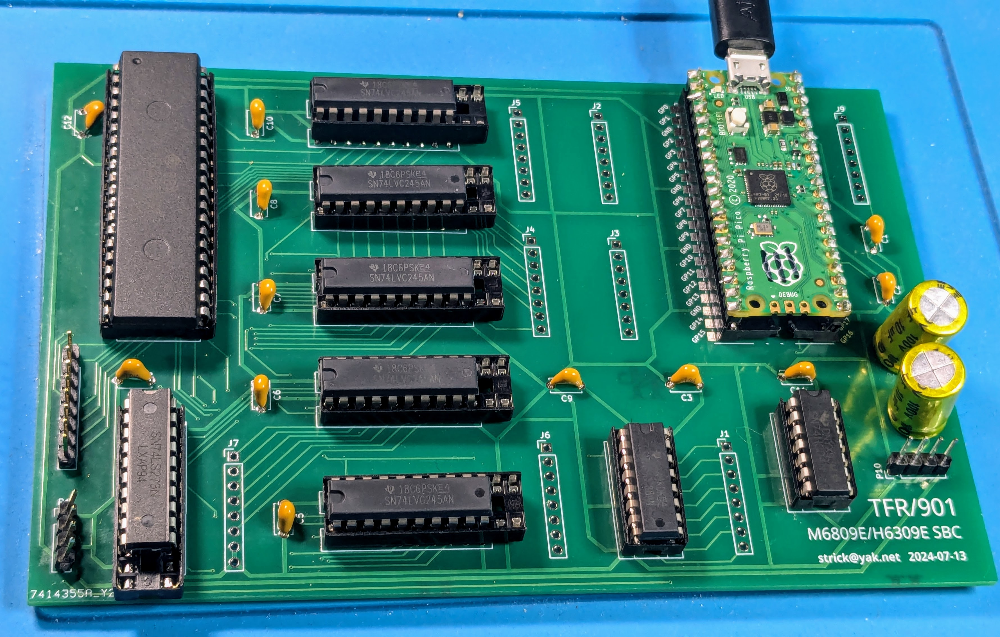
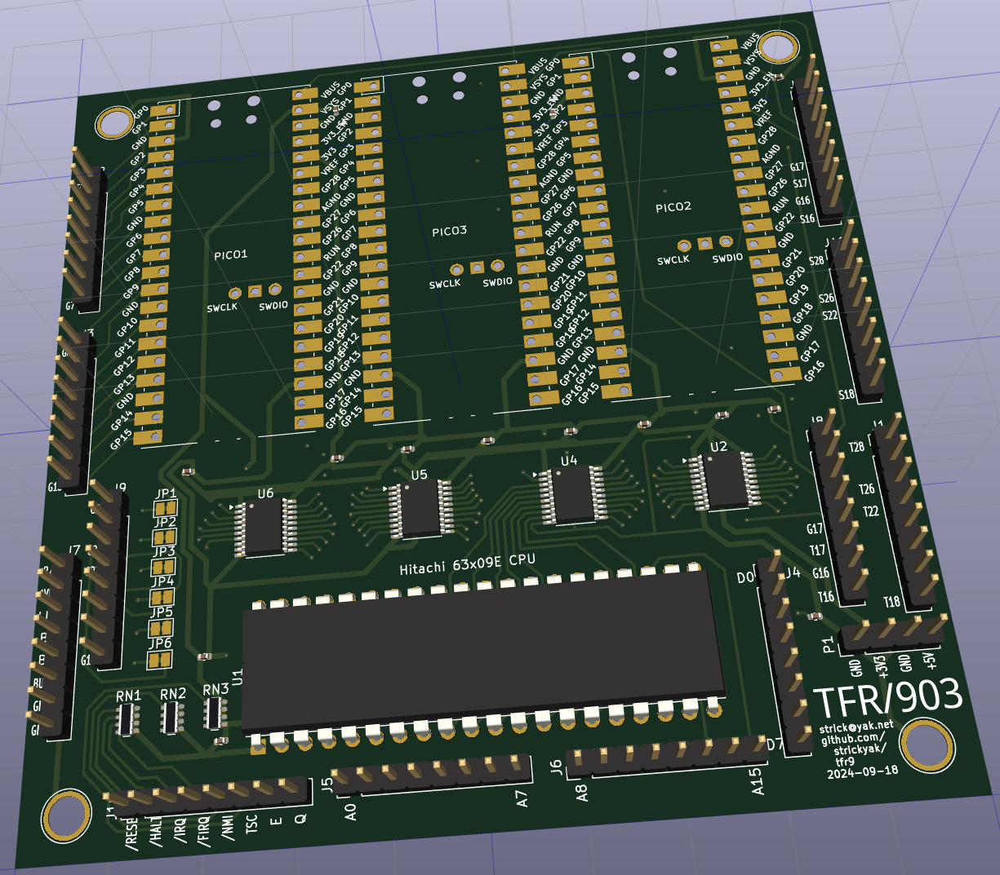
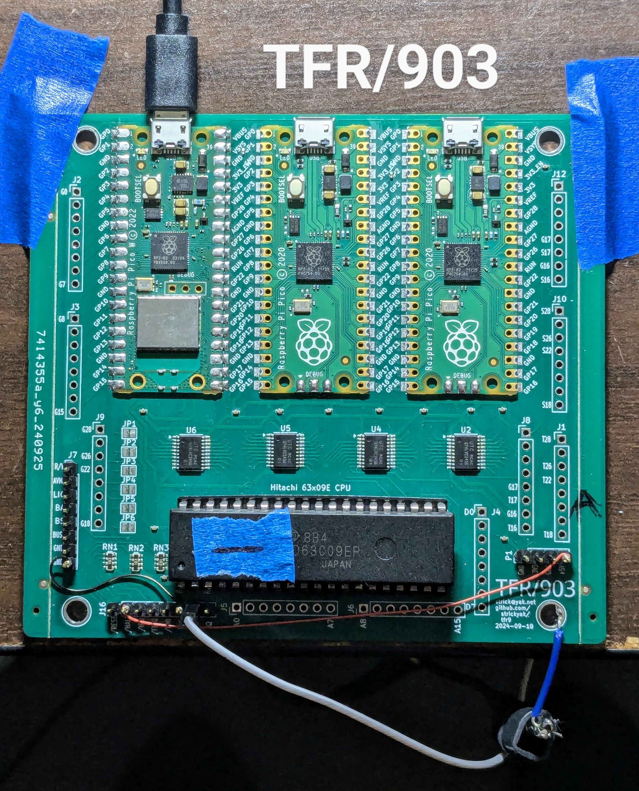
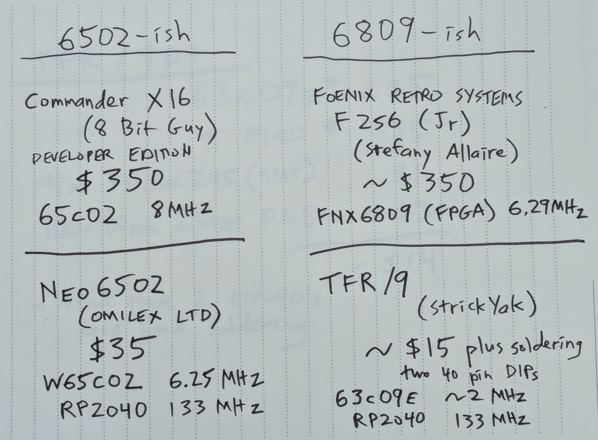
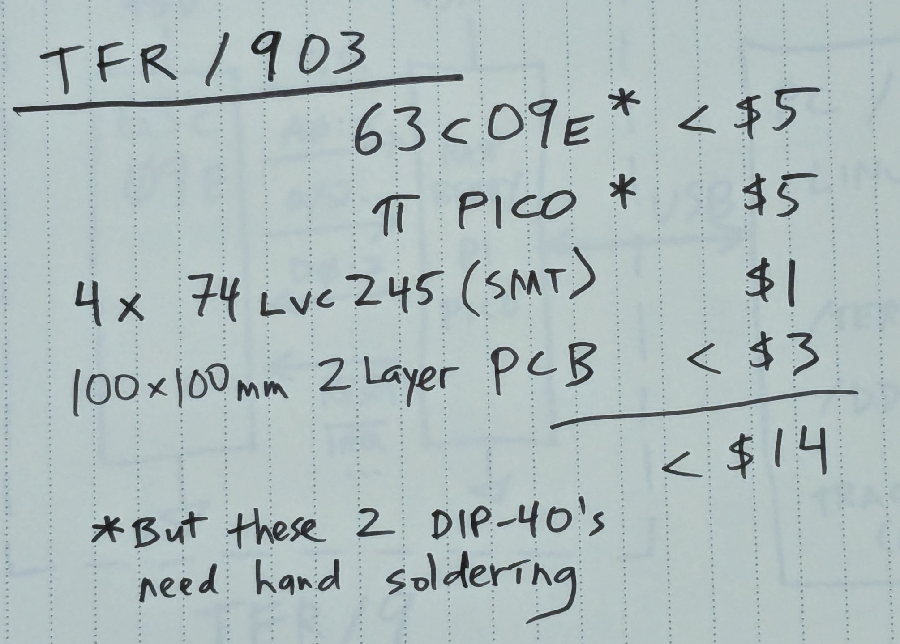
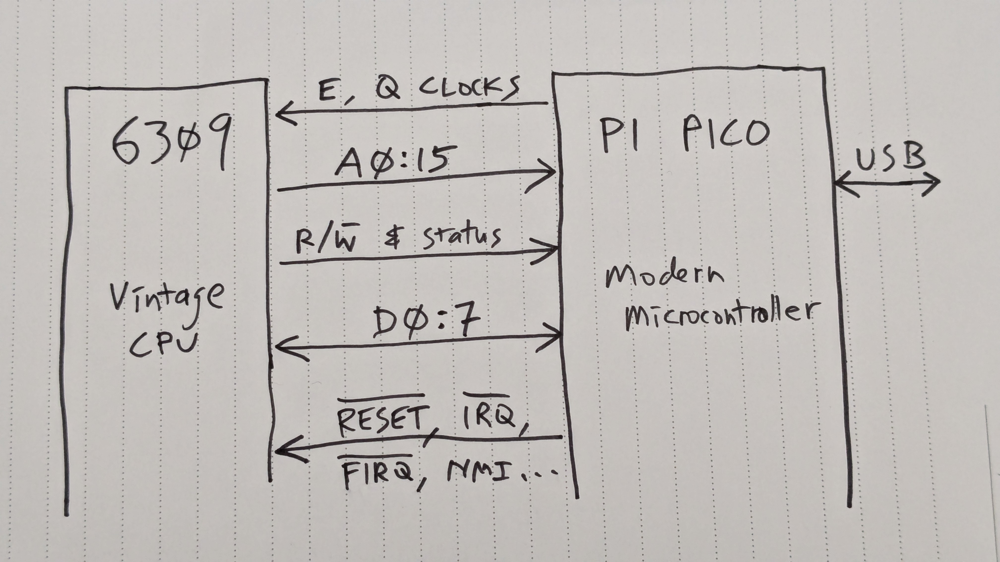
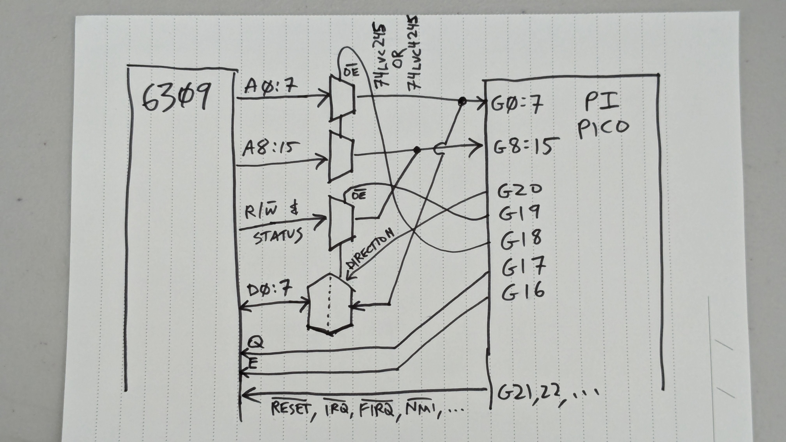
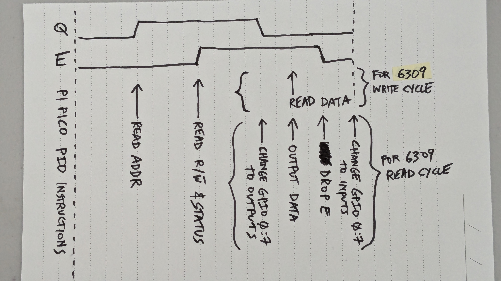
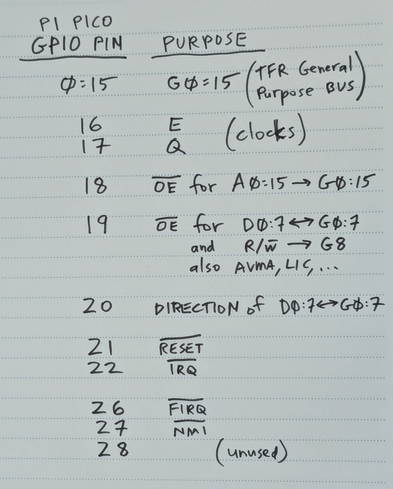

https://github.com/strickyak/tfr9/
Henry Strickland (github: strickyak; discord: strick9)
TFR/9 is the name of the family of designs.
TFR/901 and TFR/903 have been produced.
More will come, making improvements.
“There’s no wrong way to retro.” – Stevie Strow
Genuine 8-bit CPU.
Modern everything else, with lots of fakery. Using another PC for keyboard, screen, disk, and network is OK.
Really Cheap ($25? $15?).
Runs a NitrOS-9 (both levels) and some Radio Shack Basic.



HD63C09EP (hereafter, 6309): A vintage 8-bit (circa 1982) 6309 CPU in a DIP-40 package.
Raspbery Pi Pico (hereafter, Pico): A modern microcontroller with
special “programmable IO” capabilities. Any version of the 40-pin DIP
package will do (Pico 1, Pico 2, Pico 1 W, …).
4x 74LVC245: Bus multiplexers (and voltage-level adapters)
for connecting the 6309 and the Pico. (Next I should use 74LVC4245s.)
Printed Circuit Board. Currently (TFR/903) it is 100x100mm 4-layer. I want to make a simpler, cheaper 2-layer one next (TFR/905).






The Pi Pico has a USB (micro) socket. This can connect to any modern computer (window, linux, mac, raspberry pi, pi zero).
A program “tconsole” runs on that modern computer, to be the keyboard and display for the machine. It’s also the disk drive.
If you use the “W” version of the Pico, wifi can be available.
This is the case on my current TFR/903, but I haven’t used it yet.
Note that at VCF in Mountain View last year, we were unable to get a Pi Pico W on the network. Maybe the little chip’s signal is too weak to participate in a noisy RF environment, or it cannot handle connecting to one network out of lots and lots of wifi networks. We’re not sure.
If you have a laptop with wifi, using the USB cable to the Laptop might be the way to go.
But if we can get Wifi working, and you can add a keyboard (USB on-the-go), VGA screen (using the second on-board Pico) (or an HDMI screen if the second pico is a Pico 2), and a way to provide power (there are optional headers you can add, or use the USB connector) – then you have a portable 6309 computer!
The TFR/903 actually has three Pico’s:
Main control of the 6309.
Reserved for generating VGA graphics (not yet begun).
For sound or whatever.
To simplify the (future) TFR/905 and make it cheaper, there will be only one Pico.
const uint PIN_E = 16; // clock output pin
const uint PIN_Q = 17; // clock output pin
void ResetCpu() {
for (uint i = 0; i <= 20; i++) {
gpio_init(i);
gpio_set_dir(i, (i<16) ? GPIO_IN : GPIO_OUT);
gpio_put(i, 1);
}
constexpr uint control_pins[] = {21, 22, 26, 27, 28};
for (uint p : control_pins) {
gpio_init(p);
gpio_put(p, 1);
gpio_set_dir(p, GPIO_OUT);
gpio_put(p, 1);
}
gpio_put(RESET_BAR_PIN, not true); // negative logic
const uint EnoughCyclesToReset = 60;
for (uint i = 0; i < EnoughCyclesToReset; i++) {
gpio_put(PIN_Q, 0);
DELAY;
gpio_put(PIN_E, 0);
DELAY;
gpio_put(PIN_Q, 1);
DELAY;
gpio_put(PIN_E, 1);
DELAY;
}
gpio_put(RESET_BAR_PIN, not false); // negative logic
}
class SmallRam {
private:
byte ram[0x10000];
public:
void Reset() {}
byte Read(uint addr) {
printf("read %x -> %x\n", addr, ram[addr & 0xFFFF]);
return ram[addr & 0xFFFF];
}
void Write(uint addr, byte data, byte block = 0) {
printf("write %x <- %x\n", addr, data);
ram[addr & 0xFFFF] = data;
}
byte FastRead(uint addr) { return Read(addr); }
void FastWrite(uint addr, byte data) { Write(addr, data); }
byte ReadPhys(uint addr) { return Read(addr); }
uint PhysSize() { return sizeof ram; }
};
class BigRam {
private:
const static uint RAM_SIZE = 128 * 1024;
const static uint RAM_MASK = RAM_SIZE - 1;
byte ram[RAM_SIZE];
uint base[2][8];
byte mmu[2][8];
bool enable_mmu;
byte current_task;
uint* current_bases;
const static uint SLOT_SHIFT = 13;
const static uint OFFSET_MASK = (1 << 13) - 1;
const static uint SLOT_MASK = 7;
void SetCurrentTask(byte a) {
assert(a < 2);
if (a != current_task) {
RP("COCO3: Now Task is %u\n", a);
}
current_task = a;
current_bases = base[a];
}
void WriteMmu(byte task, byte slot, byte blk) {
RP("WriteMmu: task %x slot %x blk %02x\n", task, slot, blk);
mmu[task][slot] = blk;
base[task][slot] = (blk << SLOT_SHIFT) & RAM_MASK;
}
uint LogicalToPhys(uint addr) {
addr = addr & 0xFFFF;
uint slot = (addr >> SLOT_SHIFT) & SLOT_MASK;
uint offset = addr & OFFSET_MASK;
bool use_mmu = enable_mmu && (addr < 0xFE00);
uint block = (use_mmu) ? mmu[current_task][slot] : 0x38 + slot;
uint pre_phys = ((block << SLOT_SHIFT) | offset);
uint phys = ((block << SLOT_SHIFT) | offset) & RAM_MASK;
return phys;
}
byte Read(uint addr) {
uint phys = LogicalToPhys(addr);
return ram[phys];
}
void Write(uint addr, byte data) {
uint phys = LogicalToPhys(addr);
ram[phys] = data;
}
; E = 1
; Q = 2
; Not RecvAddress = 4
; Not RecvData = 8
; Not SendData = 16 + 8
; Phase1 : 0 : neither
; Phase2 : 2 : just Q
; Phase3 : 3 : both
; Phase4 : 1 : just E
; None = 28
; ReceiveAddress = None - 4 = 24
; ReceiveData = None - 8 = 20
; SendData = ReceiveData - 16 = 4
.program tpio
.side_set 5
.wrap_target ; BEGIN LOOP
top:
nop side 24 ; Phase1 + RecvAddr
nop side 24 ; Phase1 + RecvAddr
nop side 24 ; Phase1 + RecvAddr
nop side 24 ; Phase1 + RecvAddr
in pins, 16 side 26 ; Phase2 + RecvAddr ; Read Address
nop side 22 ; Phase2 + RecvData
nop side 22 ; Phase2 + RecvData
nop side 23 ; Phase3 + RecvData
in pins, 16 side 23 ; Phase3 + RecvData ; Read Data & status
jmp pin, read side 23 ; Phase3 + RecvData ; Jump based on R/W pin.
write: ; IF WRITE CYCLE (Receiving from CPU)
nop side 21 ; Phase4 + RecvData
in pins, 16 side 21 ; Phase4 + RecvData ; Receive accurate data.
nop side 24 ; Phase4 + RecvAddr
jmp top side 24 ; Phase4 + RecvAddr
read: ; ELSE READ CYCLE (Sending to CPU)
pull block side 21 ; Phase4 + RecvData
out pindirs,16 side 21 ; Phase4 + RecvData ; change Data Pins to output
pull block side 5 ; Phase4 + SendData
out pins,16 side 5 ; Phase4 + SendData ; output the data.
nop side 4 ; Phase1 + SendData ; Drop E (P4->P1) but continue to output data.
pull block side 4 ; Phase1 + SendData
out pindirs,16 side 4 ; Phase1 + SendData ; change Data Pins to inputs
.wrap ; REPEAT LOOP
NitrOS-9/6809 Level 2
TFR/901
(C) 2014 The NitrOS-9 Project
** DEVELOPMENT BUILD **
** NOT FOR DISTRIBUTION! **
Tue Nov 5 19:24:51 2024
http://www.nitros9.org
{12} BASIC09
6809 VERSION 01.01.00
COPYRIGHT 1980 BY MOTOROLA INC.
AND MICROWARE SYSTEMS CORP.
REPRODUCED UNDER LICENSE
TO TANDY CORP.
ALL RIGHTS RESERVED.
Basic09
Ready
B:PROCEDURE Program
*
E:*
E:*
E:*
E:*
E:*
E:*
E:*
E:*
E:*
E:Ready
B:{*1.*2.*3.*4.*5.*6.*7.*8.*9.*10.*11.*12.*13.*14.*15.*16.*17.*18.*19.*20.*21.*22.*23.*24.*25.*26.*27.*28.*29.*30.*31.*32.*33.*34.*35.*36.*37.*38.*39.*40.*41.*42.*43.*44.*45.*46.*47.*48.*49.*50.*51.*52.*53.*54.*55.*56.*57.*58.*59.*60.*61.*62.*63.*64.*65.*66.*67.*68.*69.*70.*71.*72.*73.*74.*75.*76.*77.*78.*79.*80.*81.*82.*83.*84.*85.*86.*87.*88.*89.*90.*91.*92.*93.*94.*95.*96.*97.*98.*99.}[0.717187 : 1 : 0.717187]
{*1.*2.*3.*4.*5.*6.*7.*8.*9.*10.*11.*12.*13.*14.*15.*16.*17.*18.*19.*20.*21.*22.*23.*24.*25.*26.*27.*28.*29.*30.*31.*32.*33.*34.*35.*36.*37.*38.*39.*40.*41.*42.*43.*44.*45.*46.*47.*48.*49.*50.*51.*52.*53.*54.*55.*56.*57.*58.*59.*60.*61.*62.*63.*64.*65.*66.*67.*68.*69.*70.*71.*72.*73.*74.*75.*76.*77.*78.*79.*80.*81.*82.*83.*84.*85.*86.*87.*88.*89.*90.*91.*92.*93.*94.*95.*96.*97.*98.*99.}[0.716860 : 2 : 0.717024]
{*1.*2.*3.*4.*5.*6.*7.*8.*9.*10.*11.*12.*13.*14.*15.*16.*17.*18.*19.*20.*21.*22.*23.*24.*25.*26.*27.*28.*29.*30.*31.*32.*33.*34.*35.*36.*37.*38.*39.*40.*41.*42.*43.*44.*45.*46.*47.*48.*49.*50.*51.*52.*53.*54.*55.*56.*57.*58.*59.*60.*61.*62.*63.*64.*65.*66.*67.*68.*69.*70.*71.*72.*73.*74.*75.*76.*77.*78.*79.*80.*81.*82.*83.*84.*85.*86.*87.*88.*89.*90.*91.*92.*93.*94.*95.*96.*97.*98.*99.}[0.716449 : 3 : 0.716832]
{*1.*2.*3.*4.*5.*6.*7.*8.*9.*10.*11.*12.*13.*14.*15.*16.*17.*18.*19.*20.*21.*22.*23.*24.*25.*26.*27.*28.*29.*30.*31.*32.*33.*34.*35.*36.*37.*38.*39.*40.*41.*42.*43.*44.*45.*46.*47.*48.*49.*50.*51.*52.*53.*54.*55.*56.*57.*58.*59.*60.*61.*62.*63.*64.*65.*66.*67.*68.*69.*70.*71.*72.*73.*74.*75.*76.*77.*78.*79.*80.*81.*82.*83.*84.*85.*86.*87.*88.*89.*90.*91.*92.*93.*94.*95.*96.*97.*98.*99.}[0.717005 : 4 : 0.716875]
{*1.*2.*3.*4.*5.*6.*7.*8.*9.*10.*11.*12.*13.*14.*15.*16.*17.*18.*19.*20.*21.*22.*23.*24.*25.*26.*27.*28.*29.*30.*31.*32.*33.*34.*35.*36.*37.*38.*39.*40.*41.*42.*43.*44.*45.*46.*47.*48.*49.*50.*51.*52.*53.*54.*55.*56.*57.*58.*59.*60.*61.*62.*63.*64.*65.*66.*67.*68.*69.*70.*71.*72.*73.*74.*75.*76.*77.*78.*79.*80.*81.*82.*83.*84.*85.*86.*87.*88.*89.*90.*91.*92.*93.*94.*95.*96.*97.*98.*99.}[0.716632 : 5 : 0.716827]
Ready
B:
Shell
OS9:dir
dir
Directory of . 2024/12/25 12:15
CMDS OS9Boot startup
OS9:dir -x
dir -x
Directory of . 2024/12/25 12:15
asm attr backup basic09 binex
build cmp cobbler copy cputype
date dcheck debug ded deiniz
del deldir devs dir dirsort
disasm display dmem dmode dsave
dump dw echo edit error
exbin format free gfx gfx2
grfdrv help httpd ident inetd
iniz inkey irqs link list
load login makdir makefile mdir
megaread merge mfree minted mmap
modpatch montype mpi os9gen padrom
park pmap proc procs prompt
pwd pxd reboot rename runb
save setime shell shell_21 shellplus
sleep smap syscall tee telnet
tmode touch tsmon tuneport unlink
utilpak1 verify wcreate xmode ncl
OS9:list startup
list startup
basic09
e
100 for j=1 to 5
210 print "{";
220 FOR z=1 to 99
240 print "*";z;
250 next z
290 print "}[0.032419 : 7 : 0.521146]"
810 FOR z=0 to 300
890 next z
900 next j
q
run
OS9:mdir
mdir
Module Directory at 12:15:32
REL Boot Krn Shell Echo MDir
Dir SMap MMap PMap Term sc6850
Init EmuDsk DD Clock Clock2 SysGo
RBF SCF IOMan KrnP2
OS9:mdir -e
mdir -e
Module Directory at 12:15:34
Block Offset Size Typ Rev Attr Use Module Name
----- ------ ---- --- --- ---- ---- ------------
3F D06 12A C1 6 r... 0 REL
3F E30 1D0 C1 0 r... 1 Boot
3F 1000 EDF C0 0 r... 0 Krn
2 1F00 602 11 0 r... 3 Shell
2 2502 22 11 1 r... 0 Echo
2 2524 2ED 11 1 r... 2 MDir
2 2811 3A1 11 0 r... 0 Dir
2 2BB2 1CF 11 0 r... 0 SMap
2 2D81 1E9 11 0 r... 0 MMap
2 2F6A 1F2 11 0 r... 0 PMap
2 315C 3F F1 0 r... 2 Term
2 319B 405 E1 0 r... 2 sc6850
2 35A0 61 C0 0 r... 2 Init
2 3601 EC E1 2 r... 9 EmuDsk
2 36ED 2F F1 1 r... 9 DD
2 371C 207 C1 5 r... 1 Clock
2 3923 76 21 0 r... 1 Clock2
2 3999 1FC 11 3 r... 1 SysGo
2 3B95 12EE D1 3 r... 9 RBF
2 4E83 778 D1 0 r... 2 SCF
2 55FB A25 C1 6 r... 1 IOMan
2 6020 CDB C0 0 r... 1 KrnP2
OS9:free
free
"TFR9-DISK" created on: 2025/01/24
Capacity: 9,999 sectors (1-sector clusters)
8,979 free sectors, largest block 8,979 sectors
OS9:mfree
mfree
Blk Begin End Blks Size
--- ------ ------ ---- ------
8 10000 1DFFF 7 56k
==== ======
Total: 7 56k
OS9:mmap
mmap
0 1 2 3 4 5 6 7 8 9 A B C D E F
# = = = = = = = = = = = = = = = =
00 U U U U U U _ U _ _ _ _ _ _ _ .
Block Size: 8192
Free Blocks: 8
KBytes Free: 64
OS9:smap
smap
0 1 2 3 4 5 6 7 8 9 A B C D E F
# = = = = = = = = = = = = = = = =
0 U U U U U U U U U U U U U U U U
1 U U U U U U U U U U U U U U U U
2 _ _ _ _ _ _ _ _ _ _ _ _ _ _ _ _
3 _ _ _ _ _ _ _ _ _ _ _ _ _ _ _ _
4 _ _ _ _ _ _ _ _ _ _ _ _ _ _ _ _
5 _ _ _ _ _ _ _ _ _ _ _ _ _ _ _ _
6 _ _ _ _ _ _ _ _ _ _ _ _ _ _ _ _
7 _ _ _ _ _ _ _ _ _ _ _ _ _ _ _ _
8 _ _ _ _ _ _ _ _ _ _ _ _ _ _ _ _
9 _ _ _ U U U U U U U U U U U U U
A U U U U U U U U U U U U U U U U
B U U U U U U U U U U U U U U U U
C U U U U U U U U U U U U U U U U
D U U U U U U U U U U U U U U U U
E U U U U U U U U U U U U U U U U
F U U U U U U U U U U U U U U U .
Number of Free Pages: 115
RAM Free in KBytes: 28
OS9:pmap
pmap
ID 01 23 45 67 89 AB CD EF Program
____ __ __ __ __ __ __ __ __ ___________
1 00 .. .. 01 02 03 04 3F SYSTEM
2 07 .. .. .. 02 03 04 3F Shell
3 05 .. .. .. 02 03 04 3F PMap
OS9:basic09
basic09
{12} BASIC09
6809 VERSION 01.01.00
COPYRIGHT 1980 BY MOTOROLA INC.
AND MICROWARE SYSTEMS CORP.
REPRODUCED UNDER LICENSE
TO TANDY CORP.
ALL RIGHTS RESERVED.
Basic09
Ready
B:$shell
$shell
Shell
OS9:proc
proc
ID Prnt User Pty Age Tsk Status Signal Module I/O Paths
___ ____ ____ ___ ___ ___ _______ __ __ _________ __________________
1 0 0 255 255 00 sTimOut 0 00 System <Term >Term >>Term
2 1 0 128 129 00 s 0 00 Shell <Term >Term >>Term
3 2 0 128 128 00 s 0 00 Basic09 <Term >Term >>Term
(Not Defined)
4 3 0 128 128 00 s 0 00 Shell <Term >Term >>Term
5 4 0 128 129 00 s 0 00 Shell <Term >Term >>Term
6 5 0 128 128 02 s 0 00 Proc <Term >Term >>Term
OS9:procs
procs
User Mem Stack
Id PId Number Pty Age Sts Signl Siz Ptr Primary Module
--- --- ------- --- --- --- ----- --- ----- ----------------
2 1 0 128 129 $80 0 3 $96E2 Shell
3 2 0 128 128 $80 0 32 $94E2 Basic09
4 3 0 128 128 $80 0 3 $92E2 Shell
5 4 0 128 129 $80 0 3 $90E2 Shell
6 5 0 128 128 $80 0 6 $05F3 Procs
OS9:pmap
pmap
ID 01 23 45 67 89 AB CD EF Program
____ __ __ __ __ __ __ __ __ ___________
1 00 .. .. 01 02 03 04 3F SYSTEM
2 07 .. .. .. 02 03 04 3F Shell
3 05 .. .. .. .. 06 08 09 Basic09
4 0B .. .. .. 02 03 04 3F Shell
5 0D .. .. .. 02 03 04 3F Shell
6 0A .. .. .. 02 03 04 3F PMap
OS9:
OS9:basic09
basic09
{12} BASIC09
6809 VERSION 01.01.00
COPYRIGHT 1980 BY MOTOROLA INC.
AND MICROWARE SYSTEMS CORP.
REPRODUCED UNDER LICENSE
TO TANDY CORP.
ALL RIGHTS RESERVED.
Basic09
Ready
B:edit hundred
edit hundred
PROCEDURE hundred
*
E:10 for i=1 to 100
10 for i=1 to 100
*
E:20 print i,
20 print i,
*
E:30 next i
30 next i
*
E:q
q
Ready
B:list
list
PROCEDURE hundred
0000 10 FOR i=1 TO 100
0015 20 PRINT i,
001E 30 NEXT i
Ready
B:run
run
1. 2. 3. 4. 5. 6. 7. 8. 9. 10. 11. 12. 13. 14. 15. 16. 17. 18. 19. 20. 21. 22. 23. 24. 25. 26. 27. 28. 29. 30. 31. 32. 33. 34. 35. 36. 37. 38. 39. 40. 41. 42. 43. 44. 45. 46. 47. 48. 49. 50. 51. 52. 53. 54. 55. 56. 57. 58. 59. 60. 61. 62. 63. 64. 65. 66. 67. 68. 69. 70. 71. 72. 73. 74. 75. 76. 77. 78. 79. 80. 81. 82. 83. 84. 85. 86. 87. 88. 89. 90. 91. 92. 93. 94. 95. 96. 97. 98. 99. 100. Ready
B:pack
pack
Ready
B:bye
bye
OS9:hundred
hundred
1. 2. 3. 4. 5. 6. 7. 8. 9. 10. 11. 12. 13. 14. 15. 16. 17. 18. 19. 20. 21. 22. 23. 24. 25. 26. 27. 28. 29. 30. 31. 32. 33. 34. 35. 36. 37. 38. 39. 40. 41. 42. 43. 44. 45. 46. 47. 48. 49. 50. 51. 52. 53. 54. 55. 56. 57. 58. 59. 60. 61. 62. 63. 64. 65. 66. 67. 68. 69. 70. 71. 72. 73. 74. 75. 76. 77. 78. 79. 80. 81. 82. 83. 84. 85. 86. 87. 88. 89. 90. 91. 92. 93. 94. 95. 96. 97. 98. 99. 100.
OS9:
( cd tmanager903 ; cp -vf with-os9 tmanager.cpp )
2192 grep OS9_CALL tconsole/_2
2193 grep OS9_CALL tconsole/_2 | grep Fork
2194 grep OS9_CALL tconsole/_2 | grep All
2195 grep OS9_CALL tconsole/_2 | grep Exit
2196 grep OS9_R tconsole/_2
2197 grep OS9_R tconsole/_2 | less
2198 grep OS9_R tconsole/_2 | awk '{ print $8 }' | sort -u | wc
2199 grep OS9_R tconsole/_2 | awk '{ print $8 }' | sort -u
$ grep OS9_CALL tconsole/_2 | grep Fork
"" === OS9_CALL _76_ "e09a_07ff": $03 = F$Fork ( A=lang_and_type=01, X=$module_name_ptr=b5cf="SysGo", Y=size_of_param_area=0000, U=start_of_param_area=b5a0, ) #759443 ...... T0[0 3e 5 1 2 3 4 3f ]
"2:SysGo" === OS9_CALL _194_ "bb4c_00fb": $03 = F$Fork ( A=lang_and_type=01, X=$module_name_ptr=ba45="Shell", Y=size_of_param_area=000b, U=start_of_param_area=ba53, ) #1078734 ...... T1[7 3e 3e 0 2 3 4 3f ]
"3:Shell" === OS9_CALL _260_ "a44b_02dd": $03 = F$Fork ( A=lang_and_type=11, X=$module_name_ptr=9f0d="Shell", Y=size_of_param_area=0008, U=start_of_param_area=02f8, ) #1384453 ...... T1[5 3e 3e 3e 2 3 4 3f ]
"4:Shell" === OS9_CALL _467_ "a44b_02ef": $03 = F$Fork ( A=lang_and_type=11, X=$module_name_ptr=0070="basic09", Y=size_of_param_area=0001, U=start_of_param_area=0077, ) #2217482 ...... T1[8 3e 3e 3e 2 3 4 3f ]
$
$ grep OS9_RETURN tconsole/_2 | grep Fork
"" === OS9_RETURN _76_ "e09a_07ff": $03 = F$Fork ( A=lang_and_type=01, X=$module_name_ptr=b5cf="SysGo", Y=size_of_param_area=0000, U=start_of_param_area=b5a0, ) #759443 --> ( RA=new_process_number=02, ) #780477 T0[0 6 5 1 2 3 4 3f ]
"2:SysGo" === OS9_RETURN _194_ "bb4c_00fb": $03 = F$Fork ( A=lang_and_type=01, X=$module_name_ptr=ba45="Shell", Y=size_of_param_area=000b, U=start_of_param_area=ba53, ) #1078760 --> ( RA=new_process_number=03, ) #1118711 T1[7 3e 3e 0 2 3 4 3f ]
"3:Shell" === OS9_RETURN _260_ "a44b_02dd": $03 = F$Fork ( A=lang_and_type=11, X=$module_name_ptr=9f0d="Shell", Y=size_of_param_area=0008, U=start_of_param_area=02f8, ) #1383791 --> ( RA=new_process_number=04, ) #1423469 T1[5 3e 3e 3e 2 3 4 3f ]
"4:Shell" === OS9_RETURN _467_ "a44b_02ef": $03 = F$Fork ( A=lang_and_type=11, X=$module_name_ptr=0070="basic09", Y=size_of_param_area=0001, U=start_of_param_area=0077, ) #2216990 --> ( RA=new_process_number=05, ) #2241301 T1[8 3e 3e 3e 2 3 4 3f ]
$
$ grep OS9_R tconsole/_2 | awk '{ print $8 }' | sort -u
F$All64
F$AllImg
F$AllPrc
F$AllTsk
F$AProc
F$Boot
F$BtMem
F$DelPrc
F$DelTsk
F$Find64
F$FModul
F$Fork
F$FreeHB
F$GPrDsc
F$GProcP
F$Icpt
F$ID
F$IRQ
F$LDABY
F$LDDDXY
F$Link
F$MapBlk
F$Mem
F$Move
F$NMLink
F$NMLoad
F$PrsNam
F$Ret64
F$SetImg
F$Sleep
F$SLink
F$SPrior
F$SRqMem
F$SRtMem
F$SSvc
F$STime
F$UnLink
F$UnLoad
F$VModul
I$Attach
I$ChgDir
I$Close
I$Detach
I$Dup
I$GetStt
I$Open
I$Read
I$ReadLn
I$Write
I$WritLn
UNKNOWN
$
( cd tmanager903 ; cp -vf with-tracking-all tmanager.cpp )
# @@ 2602 20 = #2 T1(0 39 3a 3b 3c 3d 3e 3f):072602 :: "=0="+0d02 # & 2603 2d = #3 # - ---- -- = #4 MMOf/rel: 72631 -> d31 BORGES: Loaded Source: "/home/strick/borges//rel.012a8d817f" (136) # @@ 2631 c6 = #5 T1(0 39 3a 3b 3c 3d 3e 3f):072631 :: "rel.012a8d817f"+002b start ldb #$FF negative - do complete boot # & 2632 ff = #6 MMOf/rel: 72633 -> d33 # @@ 2633 7f = #7 T1(0 39 3a 3b 3c 3d 3e 3f):072633 :: "rel.012a8d817f"+002d clr >$FFDF added for OS-9 ROM Kit boots +BGP+ # & 2634 ff = #8 # & 2635 df = #9 # - ---- -- = #10 # r ffdf 00 =Y #11 # - ---- -- =Y #12 # w ffdf 00 = #13 MMOf/rel: 72636 -> d36 # @@ 2636 1a = #14 T1(0 39 3a 3b 3c 3d 3e 3f):072636 :: "rel.012a8d817f"+0030 start1 orcc #IntMasks turn off IRQ's # & 2637 50 = #15 # & 2638 7f = #16 MMOf/rel: 72638 -> d38 # @@ 2638 7f = #17 T1(0 39 3a 3b 3c 3d 3e 3f):072638 :: "rel.012a8d817f"+0032 clr >PIA0Base+3 turn off SAM IRQ's # & 2639 ff = #18 # & 263a 03 = #19 # - ---- -- = #20 # r ff03 80 =Y #21 # - ---- -- =Y #22 # = PIA0: ff03 w # w ff03 00 = #23 MMOf/rel: 7263b -> d3b # @@ 263b 4f = #24 T1(0 39 3a 3b 3c 3d 3e 3f):07263b :: "rel.012a8d817f"+0035 clra make A=0 for later # & 263c 1f = #25 MMOf/rel: 7263c -> d3c # @@ 263c 1f = #26 T1(0 39 3a 3b 3c 3d 3e 3f):07263c :: "rel.012a8d817f"+0036 tfr a,dp # & 263d 8b = #27 # - ---- -- = #28 # - ---- -- = #29 # - ---- -- = #30 # - ---- -- = #31 MMOf/rel: 7263e -> d3e # @@ 263e 0f = #32 T1(0 39 3a 3b 3c 3d 3e 3f):07263e :: "rel.012a8d817f"+0038 clr <D.CBStrt cold boot start: don't re-boot on reset # & 263f 71 = #33 # - ---- -- = #34 # r 0071 00 =Y #35 # - ---- -- =Y #36 # w 0071 00 = #37 MMOf/rel: 72640 -> d40 # @@ 2640 7f = #38 T1(0 39 3a 3b 3c 3d 3e 3f):072640 :: "rel.012a8d817f"+003a clr >DAT.Regs+0 map RAM block 0 to block 0 in DAT # & 2641 ff = #39 # & 2642 a0 = #40 # - ---- -- = #41 # r ffa0 00 =Y #42 # - ---- -- =Y #43 # w ffa0 00 = #44 MMOf/rel: 72643 -> d43 # @@ 2643 10 = #45 T1(0 39 3a 3b 3c 3d 3e 3f):072643 :: "rel.012a8d817f"+003d lds #$1FFF set stack to the end of the block # & 2644 ce = #46 # & 2645 1f =Y #47 # & 2646 ff = #48 MMOf/rel: 72647 -> d47 # @@ 2647 e7 = #49 T1(0 39 3a 3b 3c 3d 3e 3f):072647 :: "rel.012a8d817f"+0041 stb ,-s save status of start, $00=cold, $01=warm # & 2648 e2 = #50 # & 2649 27 = #51 # - ---- -- = #52 # - ---- -- = #53 # w 1ffe ff = #54 MMOf/rel: 72649 -> d49 # @@ 2649 27 = #55 T1(0 39 3a 3b 3c 3d 3e 3f):072649 :: "rel.012a8d817f"+0043 beq Cont --don't clear out direct page if it's a crash # & 264a 0a = #56 # - ---- -- = #57 MMOf/rel: 7264b -> d4b # @@ 264b 5f = #58 T1(0 39 3a 3b 3c 3d 3e 3f):07264b :: "rel.012a8d817f"+0045 clrb # & 264c 1f = #59 MMOf/rel: 7264c -> d4c # @@ 264c 1f = #60 T1(0 39 3a 3b 3c 3d 3e 3f):07264c :: "rel.012a8d817f"+0046 tfr d,x here, too # & 264d 01 = #61 # - ---- -- = #62 # - ---- -- = #63 # - ---- -- = #64 # - ---- -- = #65 MMOf/rel: 7264e -> d4e # @@ 264e a7 = #66 T1(0 39 3a 3b 3c 3d 3e 3f):07264e :: "rel.012a8d817f"+0048 L0072 sta ,x+ clear out the direct page # & 264f 80 = #67 # & 2650 5c = #68 # - ---- -- = #69 # - ---- -- = #70 # w 0000 00 = #71 MMOf/rel: 72650 -> d50 # @@ 2650 5c = #72 T1(0 39 3a 3b 3c 3d 3e 3f):072650 :: "rel.012a8d817f"+004a incb Boot won't be using any of it! # & 2651 26 = #73 MMOf/rel: 72651 -> d51 # @@ 2651 26 = #74 T1(0 39 3a 3b 3c 3d 3e 3f):072651 :: "rel.012a8d817f"+004b bne L0072 BUT RAMMER/MD DOES!!! # & 2652 fb = #75 # - ---- -- = #76 MMOf/rel: 7264e -> d4e # @ 264e a7 = #77 T1(0 39 3a 3b 3c 3d 3e 3f):07264e :: "rel.012a8d817f"+0048 L0072 sta ,x+ clear out the direct page # & 264f 80 = #78 # & 2650 5c = #79 # - ---- -- = #80 # - ---- -- = #81 # w 0001 00 = #82 MMOf/rel: 72650 -> d50 # @ 2650 5c = #83 T1(0 39 3a 3b 3c 3d 3e 3f):072650 :: "rel.012a8d817f"+004a incb Boot won't be using any of it! # & 2651 26 = #84 MMOf/rel: 72651 -> d51 # @ 2651 26 = #85 T1(0 39 3a 3b 3c 3d 3e 3f):072651 :: "rel.012a8d817f"+004b bne L0072 BUT RAMMER/MD DOES!!! # & 2652 fb = #86 # - ---- -- = #87 MMOf/rel: 7264e -> d4e # @ 264e a7 = #88 T1(0 39 3a 3b 3c 3d 3e 3f):07264e :: "rel.012a8d817f"+0048 L0072 sta ,x+ clear out the direct page # & 264f 80 = #89 # & 2650 5c = #90 # - ---- -- = #91 # - ---- -- = #92 # w 0002 00 = #93 MMOf/rel: 72650 -> d50 # @ 2650 5c = #94 T1(0 39 3a 3b 3c 3d 3e 3f):072650 :: "rel.012a8d817f"+004a incb Boot won't be using any of it! # & 2651 26 = #95 MMOf/rel: 72651 -> d51 # @ 2651 26 = #96 T1(0 39 3a 3b 3c 3d 3e 3f):072651 :: "rel.012a8d817f"+004b bne L0072 BUT RAMMER/MD DOES!!! # & 2652 fb = #97 # - ---- -- = #98 MMOf/rel: 7264e -> d4e # @ 264e a7 = #99 T1(0 39 3a 3b 3c 3d 3e 3f):07264e :: "rel.012a8d817f"+0048 L0072 sta ,x+ clear out the direct page
# @ a159 22 = #1088062 T1(5 3e 3e 3e 2 3 4 3f):006159 :: "shell.0602715f91"+0259 bhi L0251 # & a15a fc = #1088063 # - ---- -- = #1088064 # @ a15b 35 = #1088065 T1(5 3e 3e 3e 2 3 4 3f):00615b :: "shell.0602715f91"+025b puls pc,x # & a15c 90 = #1088066 # - ---- -- = #1088067 # - ---- -- = #1088068 # r 02e6 02 = #1088069 # r 02e7 ff = #1088070 # r 02e8 a1 = #1088071 # r 02e9 17 = #1088072 # r 02ea a0 = #1088073 # @ a117 34 = #1088074 T1(5 3e 3e 3e 2 3 4 3f):006117 :: "shell.0602715f91"+0217 pshs y # & a118 20 = #1088075 # - ---- -- = #1088076 # - ---- -- = #1088077 # r 02ea a0 = #1088078 # w 02e9 40 = #1088079 # w 02e8 a0 = #1088080 # @ a119 8d = #1088081 T1(5 3e 3e 3e 2 3 4 3f):006119 :: "shell.0602715f91"+0219 bsr L0264 # & a11a 4f = #1088082 # - ---- -- = #1088083 # - ---- -- = #1088084 # - ---- -- = #1088085 # w 02e7 1b = #1088086 # w 02e6 a1 = #1088087 # @ a16a 34 = #1088088 T1(5 3e 3e 3e 2 3 4 3f):00616a :: "shell.0602715f91"+026a L0264 pshs y,x # & a16b 30 = #1088089 # - ---- -- = #1088090 # - ---- -- = #1088091 # r 02e6 a1 = #1088092 # w 02e5 40 = #1088093 # w 02e4 a0 = #1088094 # w 02e3 ff = #1088095 # w 02e2 02 = #1088096 # @ a16c 31 = #1088097 T1(5 3e 3e 3e 2 3 4 3f):00616c :: "shell.0602715f91"+026c leay $02,y # & a16d 22 = #1088098 # & a16e ae = #1088099 # - ---- -- = #1088100 # - ---- -- = #1088101 # @ a16e ae = #1088102 T1(5 3e 3e 3e 2 3 4 3f):00616e :: "shell.0602715f91"+026e L0268 ldx ,s # & a16f e4 = #1088103 # & a170 a6 = #1088104 # r 02e2 02 =Y #1088105 # r 02e3 ff = #1088106 # @ a170 a6 = #1088107 T1(5 3e 3e 3e 2 3 4 3f):006170 :: "shell.0602715f91"+0270 L026A lda ,x+ # & a171 80 = #1088108 # & a172 81 = #1088109 # - ---- -- = #1088110 # - ---- -- = #1088111 # r 02ff 0d = #1088112 # @ a172 81 = #1088113 T1(5 3e 3e 3e 2 3 4 3f):006172 :: "shell.0602715f91"+0272 cmpa #$61 # & a173 61 = #1088114 # @ a174 25 = #1088115 T1(5 3e 3e 3e 2 3 4 3f):006174 :: "shell.0602715f91"+0274 bcs L0272 # & a175 02 = #1088116 # - ---- -- = #1088117 # @ a178 a8 = #1088118 T1(5 3e 3e 3e 2 3 4 3f):006178 :: "shell.0602715f91"+0278 L0272 eora ,y+ # & a179 a0 = #1088119 # & a17a 48 = #1088120 # - ---- -- = #1088121 # - ---- -- = #1088122 # r a042 a1 = #1088123 # @ a17a 48 = #1088124 T1(5 3e 3e 3e 2 3 4 3f):00617a :: "shell.0602715f91"+027a lsla # & a17b 26 = #1088125 # @ a17b 26 = #1088126 T1(5 3e 3e 3e 2 3 4 3f):00617b :: "shell.0602715f91"+027b bne L0286 # & a17c 0f = #1088127 # - ---- -- = #1088128 # @ a18c 31 = #1088129 T1(5 3e 3e 3e 2 3 4 3f):00618c :: "shell.0602715f91"+028c L0286 leay -$01,y # & a18d 3f = #1088130 # & a18e a6 = #1088131 # - ---- -- = #1088132 # - ---- -- = #1088133 # @ a18e a6 = #1088134 T1(5 3e 3e 3e 2 3 4 3f):00618e :: "shell.0602715f91"+028e L0288 lda ,y+ # & a18f a0 = #1088135 # & a190 2a = #1088136 # - ---- -- = #1088137 # - ---- -- = #1088138 # r a042 a1 = #1088139 # @ a190 2a = #1088140 T1(5 3e 3e 3e 2 3 4 3f):006190 :: "shell.0602715f91"+0290 bpl L0288 # & a191 fc = #1088141 # - ---- -- = #1088142 # @ a192 10 = #1088143 T1(5 3e 3e 3e 2 3 4 3f):006192 :: "shell.0602715f91"+0292 sty $02,s # & a193 af = #1088144 # & a194 62 = #1088145 # & a195 ec = #1088146 # - ---- -- = #1088147 # w 02e4 a0 =Y #1088148 # w 02e5 43 = #1088149 # @ a195 ec = #1088150 T1(5 3e 3e 3e 2 3 4 3f):006195 :: "shell.0602715f91"+0295 ldd ,y++ # & a196 a1 = #1088151 # & a197 26 = #1088152 # - ---- -- = #1088153 # - ---- -- = #1088154 # - ---- -- = #1088155 # r a043 02 =Y #1088156 # r a044 fb = #1088157 # @ a197 26 = #1088158 T1(5 3e 3e 3e 2 3 4 3f):006197 :: "shell.0602715f91"+0297 bne L0268 # & a198 d5 = #1088159 # - ---- -- = #1088160 # @ a16e ae = #1088161 T1(5 3e 3e 3e 2 3 4 3f):00616e :: "shell.0602715f91"+026e L0268 ldx ,s # & a16f e4 = #1088162 # & a170 a6 = #1088163 # r 02e2 02 =Y #1088164 # r 02e3 ff = #1088165 # @ a170 a6 = #1088166 T1(5 3e 3e 3e 2 3 4 3f):006170 :: "shell.0602715f91"+0270 L026A lda ,x+ # & a171 80 = #1088167 # & a172 81 = #1088168 # - ---- -- = #1088169 # - ---- -- = #1088170 # r 02ff 0d = #1088171 # @ a172 81 = #1088172 T1(5 3e 3e 3e 2 3 4 3f):006172 :: "shell.0602715f91"+0272 cmpa #$61 # & a173 61 = #1088173 # @ a174 25 = #1088174 T1(5 3e 3e 3e 2 3 4 3f):006174 :: "shell.0602715f91"+0274 bcs L0272 # & a175 02 = #1088175 # - ---- -- = #1088176 # @ a178 a8 = #1088177 T1(5 3e 3e 3e 2 3 4 3f):006178 :: "shell.0602715f91"+0278 L0272 eora ,y+ # & a179 a0 = #1088178 # & a17a 48 = #1088179 # - ---- -- = #1088180 # - ---- -- = #1088181 # r a045 bb = #1088182 # @ a17a 48 = #1088183 T1(5 3e 3e 3e 2 3 4 3f):00617a :: "shell.0602715f91"+027a lsla # & a17b 26 = #1088184 # @ a17b 26 = #1088185 T1(5 3e 3e 3e 2 3 4 3f):00617b :: "shell.0602715f91"+027b bne L0286 # & a17c 0f = #1088186 # - ---- -- = #1088187 # @ a18c 31 = #1088188 T1(5 3e 3e 3e 2 3 4 3f):00618c :: "shell.0602715f91"+028c L0286 leay -$01,y # & a18d 3f = #1088189 # & a18e a6 = #1088190 # - ---- -- = #1088191 # - ---- -- = #1088192 # @ a18e a6 = #1088193 T1(5 3e 3e 3e 2 3 4 3f):00618e :: "shell.0602715f91"+028e L0288 lda ,y+ # & a18f a0 = #1088194 # & a190 2a = #1088195 # - ---- -- = #1088196 # - ---- -- = #1088197 # r a045 bb = #1088198 # @ a190 2a = #1088199 T1(5 3e 3e 3e 2 3 4 3f):006190 :: "shell.0602715f91"+0290 bpl L0288 # & a191 fc = #1088200 # - ---- -- = #1088201 # @ a192 10 = #1088202 T1(5 3e 3e 3e 2 3 4 3f):006192 :: "shell.0602715f91"+0292 sty $02,s # & a193 af = #1088203 # & a194 62 = #1088204 # & a195 ec = #1088205 # - ---- -- = #1088206 # w 02e4 a0 =Y #1088207 # w 02e5 46 = #1088208 # @ a195 ec = #1088209 T1(5 3e 3e 3e 2 3 4 3f):006195 :: "shell.0602715f91"+0295 ldd ,y++ # & a196 a1 = #1088210 # & a197 26 = #1088211 # - ---- -- = #1088212 # - ---- -- = #1088213 # - ---- -- = #1088214 # r a046 03 =Y #1088215 # r a047 11 = #1088216 # @ a197 26 = #1088217 T1(5 3e 3e 3e 2 3 4 3f):006197 :: "shell.0602715f91"+0297 bne L0268 # & a198 d5 = #1088218 # - ---- -- = #1088219 # @ a16e ae = #1088220 T1(5 3e 3e 3e 2 3 4 3f):00616e :: "shell.0602715f91"+026e L0268 ldx ,s # & a16f e4 = #1088221 # & a170 a6 = #1088222 # r 02e2 02 =Y #1088223 # r 02e3 ff = #1088224 # @ a170 a6 = #1088225 T1(5 3e 3e 3e 2 3 4 3f):006170 :: "shell.0602715f91"+0270 L026A lda ,x+ # & a171 80 = #1088226 # & a172 81 = #1088227 # - ---- -- = #1088228 # - ---- -- = #1088229 # r 02ff 0d = #1088230 # @ a172 81 = #1088231 T1(5 3e 3e 3e 2 3 4 3f):006172 :: "shell.0602715f91"+0272 cmpa #$61 # & a173 61 = #1088232 # @ a174 25 = #1088233 T1(5 3e 3e 3e 2 3 4 3f):006174 :: "shell.0602715f91"+0274 bcs L0272 # & a175 02 = #1088234 # - ---- -- = #1088235 # @ a178 a8 = #1088236 T1(5 3e 3e 3e 2 3 4 3f):006178 :: "shell.0602715f91"+0278 L0272 eora ,y+ # & a179 a0 = #1088237 # & a17a 48 = #1088238 # - ---- -- = #1088239 # - ---- -- = #1088240 # r a048 a6 = #1088241 # @ a17a 48 = #1088242 T1(5 3e 3e 3e 2 3 4 3f):00617a :: "shell.0602715f91"+027a lsla # & a17b 26 = #1088243 # @ a17b 26 = #1088244 T1(5 3e 3e 3e 2 3 4 3f):00617b :: "shell.0602715f91"+027b bne L0286 # & a17c 0f = #1088245 # - ---- -- = #1088246 # @ a18c 31 = #1088247 T1(5 3e 3e 3e 2 3 4 3f):00618c :: "shell.0602715f91"+028c L0286 leay -$01,y # & a18d 3f = #1088248 # & a18e a6 = #1088249 # - ---- -- = #1088250 # - ---- -- = #1088251 # @ a18e a6 = #1088252 T1(5 3e 3e 3e 2 3 4 3f):00618e :: "shell.0602715f91"+028e L0288 lda ,y+ # & a18f a0 = #1088253 # & a190 2a = #1088254 # - ---- -- = #1088255 # - ---- -- = #1088256 # r a048 a6 = #1088257 # @ a190 2a = #1088258 T1(5 3e 3e 3e 2 3 4 3f):006190 :: "shell.0602715f91"+0290 bpl L0288 # & a191 fc = #1088259 # - ---- -- = #1088260 # @ a192 10 = #1088261 T1(5 3e 3e 3e 2 3 4 3f):006192 :: "shell.0602715f91"+0292 sty $02,s # & a193 af = #1088262 # & a194 62 = #1088263 # & a195 ec = #1088264 # - ---- -- = #1088265 # w 02e4 a0 =Y #1088266 # w 02e5 49 = #1088267 # @ a195 ec = #1088268 T1(5 3e 3e 3e 2 3 4 3f):006195 :: "shell.0602715f91"+0295 ldd ,y++ # & a196 a1 = #1088269 # & a197 26 = #1088270 # - ---- -- = #1088271 # - ---- -- = #1088272 # - ---- -- = #1088273 # r a049 02 =Y #1088274 # r a04a ee = #1088275 # @ a197 26 = #1088276 T1(5 3e 3e 3e 2 3 4 3f):006197 :: "shell.0602715f91"+0297 bne L0268 # & a198 d5 = #1088277 # - ---- -- = #1088278 # @ a16e ae = #1088279 T1(5 3e 3e 3e 2 3 4 3f):00616e :: "shell.0602715f91"+026e L0268 ldx ,s # & a16f e4 = #1088280 # & a170 a6 = #1088281 # r 02e2 02 =Y #1088282 # r 02e3 ff = #1088283 # @ a170 a6 = #1088284 T1(5 3e 3e 3e 2 3 4 3f):006170 :: "shell.0602715f91"+0270 L026A lda ,x+ # & a171 80 = #1088285 # & a172 81 = #1088286 # - ---- -- = #1088287 # - ---- -- = #1088288 # r 02ff 0d = #1088289 # @ a172 81 = #1088290 T1(5 3e 3e 3e 2 3 4 3f):006172 :: "shell.0602715f91"+0272 cmpa #$61 # & a173 61 = #1088291 # @ a174 25 = #1088292 T1(5 3e 3e 3e 2 3 4 3f):006174 :: "shell.0602715f91"+0274 bcs L0272 # & a175 02 = #1088293 # - ---- -- = #1088294 # @ a178 a8 = #1088295 T1(5 3e 3e 3e 2 3 4 3f):006178 :: "shell.0602715f91"+0278 L0272 eora ,y+ # & a179 a0 = #1088296 # & a17a 48 = #1088297 # - ---- -- = #1088298 # - ---- -- = #1088299 # r a04b 8d = #1088300 # @ a17a 48 = #1088301 T1(5 3e 3e 3e 2 3 4 3f):00617a :: "shell.0602715f91"+027a lsla # & a17b 26 = #1088302 # @ a17b 26 = #1088303 T1(5 3e 3e 3e 2 3 4 3f):00617b :: "shell.0602715f91"+027b bne L0286 # & a17c 0f = #1088304 # - ---- -- = #1088305 # @ a17d 24 = #1088306 T1(5 3e 3e 3e 2 3 4 3f):00617d :: "shell.0602715f91"+027d bcc L026A # & a17e f1 = #1088307 # - ---- -- = #1088308 # @@ a17f a6 = #1088309 T1(5 3e 3e 3e 2 3 4 3f):00617f :: "shell.0602715f91"+027f lda -$01,y # & a180 3f = #1088310 # & a181 81 = #1088311 # - ---- -- = #1088312 # r a04b 8d = #1088313 # @@ a181 81 = #1088314 T1(5 3e 3e 3e 2 3 4 3f):006181 :: "shell.0602715f91"+0281 cmpa #$C1 # & a182 c1 = #1088315 # @@ a183 25 = #1088316 T1(5 3e 3e 3e 2 3 4 3f):006183 :: "shell.0602715f91"+0283 bcs L0283 # & a184 04 = #1088317 # - ---- -- = #1088318 # @@ a189 4f = #1088319 T1(5 3e 3e 3e 2 3 4 3f):006189 :: "shell.0602715f91"+0289 L0283 clra # & a18a 35 = #1088320 # @@ a18a 35 = #1088321 T1(5 3e 3e 3e 2 3 4 3f):00618a :: "shell.0602715f91"+028a puls pc,y,b,a # & a18b a6 = #1088322 # - ---- -- = #1088323 # - ---- -- = #1088324 # r 02e2 02 = #1088325 # r 02e3 ff = #1088326 # r 02e4 a0 = #1088327 # r 02e5 49 = #1088328 # r 02e6 a1 = #1088329 # r 02e7 1b = #1088330 # r 02e8 a0 = #1088331 # @ a11b 25 = #1088332 T1(5 3e 3e 3e 2 3 4 3f):00611b :: "shell.0602715f91"+021b bcs L0220 # & a11c 09 = #1088333 # - ---- -- = #1088334 # @@ a11d ec = #1088335 T1(5 3e 3e 3e 2 3 4 3f):00611d :: "shell.0602715f91"+021d ldd ,y # & a11e a4 = #1088336 # & a11f ad = #1088337 # r a049 02 =Y #1088338 # r a04a ee = #1088339 # @@ a11f ad = #1088340 T1(5 3e 3e 3e 2 3 4 3f):00611f :: "shell.0602715f91"+021f jsr d,y # & a120 ab = #1088341 # & a121 35 = #1088342 # & a122 20 = #1088343 # - ---- -- = #1088344 # - ---- -- = #1088345 # - ---- -- = #1088346 # r a337 30 = #1088347 # - ---- -- = #1088348 # w 02e7 21 = #1088349 # w 02e6 a1 = #1088350 # @@ a337 30 = #1088351 T1(5 3e 3e 3e 2 3 4 3f):006337 :: "shell.0602715f91"+0437 Return leax -$01,x # & a338 1f = #1088352 # & a339 17 = #1088353 # - ---- -- = #1088354 # - ---- -- = #1088355 # @@ a339 17 = #1088356 T1(5 3e 3e 3e 2 3 4 3f):006339 :: "shell.0602715f91"+0439 lbsr L04CA # & a33a 00 = #1088357 # & a33b 94 = #1088358 # - ---- -- = #1088359 # - ---- -- = #1088360 # - ---- -- = #1088361 # - ---- -- = #1088362 # w 02e5 3c = #1088363 # w 02e4 a3 = #1088364 # @@ a3d0 34 = #1088365 T1(5 3e 3e 3e 2 3 4 3f):0063d0 :: "shell.0602715f91"+04d0 L04CA pshs u,y,x # & a3d1 70 = #1088366 # - ---- -- = #1088367 # - ---- -- = #1088368 # r 02e4 a3 = #1088369 # w 02e3 00 = #1088370 # w 02e2 00 = #1088371 # w 02e1 49 = #1088372 # w 02e0 a0 = #1088373 # w 02df ff = #1088374 # w 02de 02 = #1088375 # @@ a3d2 4f = #1088376 T1(5 3e 3e 3e 2 3 4 3f):0063d2 :: "shell.0602715f91"+04d2 clra # & a3d3 9e = #1088377 # @@ a3d3 9e = #1088378 T1(5 3e 3e 3e 2 3 4 3f):0063d3 :: "shell.0602715f91"+04d3 ldx <u0004 # & a3d4 04 = #1088379 # - ---- -- = #1088380 # r 0004 02 =Y #1088381 # r 0005 f5 = #1088382 # @@ a3d5 10 = #1088383 T1(5 3e 3e 3e 2 3 4 3f):0063d5 :: "shell.0602715f91"+04d5 os9 F$NMLink # & a3d6 3f = #1088384 # & a3d7 21 = #1088385 # - ---- -- = #1088386 # w 02dd d7 = #1088387 # w 02dc a3 = #1088388 # w 02db 00 = #1088389 # w 02da 00 = #1088390 # w 02d9 49 = #1088391 # w 02d8 a0 = #1088392 # w 02d7 f5 = #1088393 # w 02d6 02 = #1088394 # w 02d5 00 = #1088395 # w 02d4 ee = #1088396 # w 02d3 00 = #1088397 # w 02d2 80 = #1088398 # - ---- -- = #1088399 # r fff4 fe =SY #1088400 C_EVENT "EVENT_SWI2" $a3d5 #1088383: a3d7:21 02dd:2d 02dd:d7 02dc:a3 02db:00 02da:00 02d9:49 02d8:a0 02d7:f5 02d6:02 02d5:00 02d4:ee 02d3:00 02d2:80 0000:00 fff4:fe fff5:f1 80 00 ee 00 02 f5 a0 49 00 00 a3 d7 "3:Shell" === OS9_CALL _217_ "a3d5_02dd": $21 = F$NMLink ( A=module_type=00, X=$module_name=02f5="startup -p", ) #1088383 ...... T1[5 3e 3e 3e 2 3 4 3f ] # r fff5 f1 =S #1088401 # - ---- -- = #1088402 # @ fef1 20 = #1088403 T1(5 3e 3e 3e 2 3 4 3f):07fef1 :: "=="+7fef1 # & fef2 b0 = #1088404 # - ---- -- = #1088405 # @ fea3 1a = #1088406 T1(5 3e 3e 3e 2 3 4 3f):07fea3 :: "krn.0edf349400"+0ea3 SWI2VCT orcc #IntMasks disable interrupts # & fea4 50 = #1088407 # & fea5 8e = #1088408 # @ fea5 8e = #1088409 T1(5 3e 3e 3e 2 3 4 3f):07fea5 :: "krn.0edf349400"+0ea5 ldx #D.SWI2 get the DP offset of the vector # & fea6 00 =Y #1088410 # & fea7 f4 = #1088411 # @ fea8 e6 = #1088412 T1(5 3e 3e 3e 2 3 4 3f):07fea8 :: "krn.0edf349400"+0ea8 SWICall ldb [R$PC,s] get the op-code of the system call # & fea9 f8 = #1088413 # & feaa 0a = #1088414 # - ---- -- = #1088415 # r 02dc a3 =Y #1088416 # r 02dd d7 = #1088417 # - ---- -- = #1088418 # r a3d7 21 = #1088419 # @ feab 4f = #1088420 T1(5 3e 3e 3e 2 3 4 3f):07feab :: "krn.0edf349400"+0eab clra clear A # & feac b7 = #1088421 # @ feac b7 = #1088422 T1(5 3e 3e 3e 2 3 4 3f):07feac :: "krn.0edf349400"+0eac sta >DAT.Task and save it in the DAT # & fead ff = #1088423 # & feae 91 = #1088424 # - ---- -- = #1088425 # w ff91 00 = #1088426 # @ feaf 1f = #1088427 T0(0 3e 3e 1 2 3 4 3f):07feaf :: "krn.0edf349400"+0eaf tfr a,dp set the direct page to 0 (assume A = 0) # & feb0 8b = #1088428 # - ---- -- = #1088429 # - ---- -- = #1088430 # - ---- -- = #1088431 # - ---- -- = #1088432 # @ feb1 96 = #1088433 T0(0 3e 3e 1 2 3 4 3f):07feb1 :: "krn.0edf349400"+0eb1 lda <D.TINIT get the shadow register # & feb2 91 = #1088434 # - ---- -- = #1088435 # r 0091 01 = #1088436 # @ feb3 85 = #1088437 T0(0 3e 3e 1 2 3 4 3f):07feb3 :: "krn.0edf349400"+0eb3 bita #$01 check it without changing it # & feb4 01 = #1088438 # @ feb5 27 = #1088439 T0(0 3e 3e 1 2 3 4 3f):07feb5 :: "krn.0edf349400"+0eb5 beq MapT0 in map 0; restore the hardware and do system service # & feb6 e0 = #1088440 # - ---- -- = #1088441 # @ feb7 0d = #1088442 T0(0 3e 3e 1 2 3 4 3f):07feb7 :: "krn.0edf349400"+0eb7 tst <D.SSTskN get system state 0,1 # & feb8 a4 = #1088443 # - ---- -- = #1088444 # r 00a4 00 = #1088445 # - ---- -- = #1088446 # - ---- -- = #1088447 # @ feb9 26 = #1088448 T0(0 3e 3e 1 2 3 4 3f):07feb9 :: "krn.0edf349400"+0eb9 bne MapGrf if in grfdrv, go to map 0 and do system service # & feba d6 = #1088449 # - ---- -- = #1088450 # @ febb b7 = #1088451 T0(0 3e 3e 1 2 3 4 3f):07febb :: "krn.0edf349400"+0ebb sta >DAT.Task go to map type X again to get the user's stack # & febc ff = #1088452 # & febd 91 = #1088453 # - ---- -- = #1088454 # w ff91 01 = #1088455 # @ febe 31 = #1088456 T1(5 3e 3e 3e 2 3 4 3f):07febe :: "krn.0edf349400"+0ebe leay <SWIStack,pc where to put the register stack: to $DF in the constant page # & febf 8c = #1088457 # & fec0 1e = #1088458 # - ---- -- = #1088459 # - ---- -- = #1088460 # @ fec1 1f = #1088461 T1(5 3e 3e 3e 2 3 4 3f):07fec1 :: "krn.0edf349400"+0ec1 tfr s,u get a copy of where the stack is # & fec2 43 = #1088462 # - ---- -- = #1088463 # - ---- -- = #1088464 # - ---- -- = #1088465 # - ---- -- = #1088466 # @ fec3 34 = #1088467 T1(5 3e 3e 3e 2 3 4 3f):07fec3 :: "krn.0edf349400"+0ec3 pshs x save X # & fec4 10 = #1088468 # - ---- -- = #1088469 # - ---- -- = #1088470 # r 02d2 80 = #1088471 # w 02d1 f4 = #1088472 # w 02d0 00 = #1088473 # @ fec5 86 = #1088474 T1(5 3e 3e 3e 2 3 4 3f):07fec5 :: "krn.0edf349400"+0ec5 lda #R$Size/2 move stack to top of memory (A is reset in L0EB8, no need to preserve) # & fec6 06 = #1088475 # @ fec7 ae = #1088476 T1(5 3e 3e 3e 2 3 4 3f):07fec7 :: "krn.0edf349400"+0ec7 l@ ldx ,u++ get the bytes # & fec8 c1 = #1088477 # & fec9 af = #1088478 # - ---- -- = #1088479 # - ---- -- = #1088480 # - ---- -- = #1088481 # r 02d2 80 =Y #1088482 # r 02d3 00 = #1088483 # @ fec9 af = #1088484 T1(5 3e 3e 3e 2 3 4 3f):07fec9 :: "krn.0edf349400"+0ec9 stx ,y++ and save them # & feca a1 = #1088485 # & fecb 4a = #1088486 # - ---- -- = #1088487 # - ---- -- = #1088488 # - ---- -- = #1088489 # w fedf 80 =Y #1088490 # w fee0 00 = #1088491 # @ fecb 4a = #1088492 T1(5 3e 3e 3e 2 3 4 3f):07fecb :: "krn.0edf349400"+0ecb deca decrement the counter # & fecc 26 = #1088493 # @ fecc 26 = #1088494 T1(5 3e 3e 3e 2 3 4 3f):07fecc :: "krn.0edf349400"+0ecc bne l@ branch if not done # & fecd f9 = #1088495 # - ---- -- = #1088496 # @ fec7 ae = #1088497 T1(5 3e 3e 3e 2 3 4 3f):07fec7 :: "krn.0edf349400"+0ec7 l@ ldx ,u++ get the bytes # & fec8 c1 = #1088498 # & fec9 af = #1088499 # - ---- -- = #1088500 # - ---- -- = #1088501 # - ---- -- = #1088502 # r 02d4 ee =Y #1088503 # r 02d5 00 = #1088504 # @ fec9 af = #1088505 T1(5 3e 3e 3e 2 3 4 3f):07fec9 :: "krn.0edf349400"+0ec9 stx ,y++ and save them # & feca a1 = #1088506 # & fecb 4a = #1088507 # - ---- -- = #1088508 # - ---- -- = #1088509 # - ---- -- = #1088510 # w fee1 ee =Y #1088511 # w fee2 00 = #1088512 # @ fecb 4a = #1088513 T1(5 3e 3e 3e 2 3 4 3f):07fecb :: "krn.0edf349400"+0ecb deca decrement the counter # & fecc 26 = #1088514 # @ fecc 26 = #1088515 T1(5 3e 3e 3e 2 3 4 3f):07fecc :: "krn.0edf349400"+0ecc bne l@ branch if not done # & fecd f9 = #1088516 # - ---- -- = #1088517 # @ fec7 ae = #1088518 T1(5 3e 3e 3e 2 3 4 3f):07fec7 :: "krn.0edf349400"+0ec7 l@ ldx ,u++ get the bytes # & fec8 c1 = #1088519 # & fec9 af = #1088520 # - ---- -- = #1088521 # - ---- -- = #1088522 # - ---- -- = #1088523 # r 02d6 02 =Y #1088524 # r 02d7 f5 = #1088525 # @ fec9 af = #1088526 T1(5 3e 3e 3e 2 3 4 3f):07fec9 :: "krn.0edf349400"+0ec9 stx ,y++ and save them # & feca a1 = #1088527 # & fecb 4a = #1088528 # - ---- -- = #1088529 # - ---- -- = #1088530 # - ---- -- = #1088531 # w fee3 02 =Y #1088532 # w fee4 f5 = #1088533 # @ fecb 4a = #1088534 T1(5 3e 3e 3e 2 3 4 3f):07fecb :: "krn.0edf349400"+0ecb deca decrement the counter # & fecc 26 = #1088535 # @ fecc 26 = #1088536 T1(5 3e 3e 3e 2 3 4 3f):07fecc :: "krn.0edf349400"+0ecc bne l@ branch if not done # & fecd f9 = #1088537 # - ---- -- = #1088538 # @ fec7 ae = #1088539 T1(5 3e 3e 3e 2 3 4 3f):07fec7 :: "krn.0edf349400"+0ec7 l@ ldx ,u++ get the bytes # & fec8 c1 = #1088540 # & fec9 af = #1088541 # - ---- -- = #1088542 # - ---- -- = #1088543 # - ---- -- = #1088544 # r 02d8 a0 =Y #1088545 # r 02d9 49 = #1088546 # @ fec9 af = #1088547 T1(5 3e 3e 3e 2 3 4 3f):07fec9 :: "krn.0edf349400"+0ec9 stx ,y++ and save them # & feca a1 = #1088548 # & fecb 4a = #1088549 # - ---- -- = #1088550 # - ---- -- = #1088551 # - ---- -- = #1088552 # w fee5 a0 =Y #1088553 # w fee6 49 = #1088554 # @ fecb 4a = #1088555 T1(5 3e 3e 3e 2 3 4 3f):07fecb :: "krn.0edf349400"+0ecb deca decrement the counter # & fecc 26 = #1088556 # @ fecc 26 = #1088557 T1(5 3e 3e 3e 2 3 4 3f):07fecc :: "krn.0edf349400"+0ecc bne l@ branch if not done # & fecd f9 = #1088558 # - ---- -- = #1088559 # @ fec7 ae = #1088560 T1(5 3e 3e 3e 2 3 4 3f):07fec7 :: "krn.0edf349400"+0ec7 l@ ldx ,u++ get the bytes # & fec8 c1 = #1088561 # & fec9 af = #1088562 # - ---- -- = #1088563 # - ---- -- = #1088564 # - ---- -- = #1088565 # r 02da 00 =Y #1088566 # r 02db 00 = #1088567 # @ fec9 af = #1088568 T1(5 3e 3e 3e 2 3 4 3f):07fec9 :: "krn.0edf349400"+0ec9 stx ,y++ and save them # & feca a1 = #1088569 # & fecb 4a = #1088570 # - ---- -- = #1088571 # - ---- -- = #1088572 # - ---- -- = #1088573 # w fee7 00 =Y #1088574 # w fee8 00 = #1088575 # @ fecb 4a = #1088576 T1(5 3e 3e 3e 2 3 4 3f):07fecb :: "krn.0edf349400"+0ecb deca decrement the counter # & fecc 26 = #1088577 # @ fecc 26 = #1088578 T1(5 3e 3e 3e 2 3 4 3f):07fecc :: "krn.0edf349400"+0ecc bne l@ branch if not done # & fecd f9 = #1088579 # - ---- -- = #1088580 # @ fec7 ae = #1088581 T1(5 3e 3e 3e 2 3 4 3f):07fec7 :: "krn.0edf349400"+0ec7 l@ ldx ,u++ get the bytes # & fec8 c1 = #1088582 # & fec9 af = #1088583 # - ---- -- = #1088584 # - ---- -- = #1088585 # - ---- -- = #1088586 # r 02dc a3 =Y #1088587 # r 02dd d7 = #1088588 # @ fec9 af = #1088589 T1(5 3e 3e 3e 2 3 4 3f):07fec9 :: "krn.0edf349400"+0ec9 stx ,y++ and save them # & feca a1 = #1088590 # & fecb 4a = #1088591 # - ---- -- = #1088592 # - ---- -- = #1088593 # - ---- -- = #1088594 # w fee9 a3 =Y #1088595 # w feea d7 = #1088596 # @ fecb 4a = #1088597 T1(5 3e 3e 3e 2 3 4 3f):07fecb :: "krn.0edf349400"+0ecb deca decrement the counter # & fecc 26 = #1088598 # @ fecc 26 = #1088599 T1(5 3e 3e 3e 2 3 4 3f):07fecc :: "krn.0edf349400"+0ecc bne l@ branch if not done # & fecd f9 = #1088600 # - ---- -- = #1088601 # @ fece 35 = #1088602 T1(5 3e 3e 3e 2 3 4 3f):07fece :: "krn.0edf349400"+0ece puls x restore X # & fecf 10 = #1088603 # - ---- -- = #1088604 # - ---- -- = #1088605 # r 02d0 00 = #1088606 # r 02d1 f4 = #1088607 # r 02d2 80 = #1088608 # @ fed0 20 = #1088609 T1(5 3e 3e 3e 2 3 4 3f):07fed0 :: "krn.0edf349400"+0ed0 bra L0EB8 go from map type 1 to map type 0 # & fed1 b9 = #1088610 # - ---- -- = #1088611 # @ fe8b 4f = #1088612 T1(5 3e 3e 3e 2 3 4 3f):07fe8b :: "krn.0edf349400"+0e8b L0EB8 clra (faster than CLR >$xxxx) # & fe8c b7 = #1088613 # @ fe8c b7 = #1088614 T1(5 3e 3e 3e 2 3 4 3f):07fe8c :: "krn.0edf349400"+0e8c sta >DAT.Task force to task 0 (system state) # & fe8d ff = #1088615 # & fe8e 91 = #1088616 # - ---- -- = #1088617 # w ff91 00 = #1088618 # @ fe8f 1f = #1088619 T0(0 3e 3e 1 2 3 4 3f):07fe8f :: "krn.0edf349400"+0e8f tfr a,dp ASSUME: A=0 from earlier # & fe90 8b = #1088620 # - ---- -- = #1088621 # - ---- -- = #1088622 # - ---- -- = #1088623 # - ---- -- = #1088624 # @ fe91 96 = #1088625 T0(0 3e 3e 1 2 3 4 3f):07fe91 :: "krn.0edf349400"+0e91 lda <D.TINIT get the shadow register # & fe92 91 = #1088626 # - ---- -- = #1088627 # r 0091 01 = #1088628 # @ fe93 84 = #1088629 T0(0 3e 3e 1 2 3 4 3f):07fe93 :: "krn.0edf349400"+0e93 anda #$FE clear the task 0 bit # & fe94 fe = #1088630 # @ fe95 97 = #1088631 T0(0 3e 3e 1 2 3 4 3f):07fe95 :: "krn.0edf349400"+0e95 sta <D.TINIT and save it back # & fe96 91 = #1088632 # - ---- -- = #1088633 # w 0091 00 = #1088634 # @ fe97 b7 = #1088635 T0(0 3e 3e 1 2 3 4 3f):07fe97 :: "krn.0edf349400"+0e97 MapT0 sta >DAT.Task come here from elsewhere, too # & fe98 ff = #1088636 # & fe99 91 = #1088637 # - ---- -- = #1088638 # w ff91 00 = #1088639 # @ fe9a 6e = #1088640 T0(0 3e 3e 1 2 3 4 3f):07fe9a :: "krn.0edf349400"+0e9a jmp [,x] execute it # & fe9b 94 = #1088641 # & fe9c 1a = #1088642 # r 00f4 f0 =Y #1088643 # r 00f5 3f = #1088644 # - ---- -- = #1088645 # @ f03f 6e = #1088646 T0(0 3e 3e 1 2 3 4 3f):07f03f :: "krn.0edf349400"+003f Vectors jmp [<-(D.SWI3-D.XSWI3),x] (-$10) (Jmp to 2ndary vector) # & f040 98 = #1088647 # & f041 f0 = #1088648 # - ---- -- = #1088649 # r 00e4 f2 =Y #1088650 # r 00e5 25 = #1088651 # - ---- -- = #1088652 # @ f225 9e = #1088653 T0(0 3e 3e 1 2 3 4 3f):07f225 :: "krn.0edf349400"+0225 XSWI2 ldx <D.Proc get the current process descriptor # & f226 50 = #1088654 # - ---- -- = #1088655 # r 0050 93 =Y #1088656 # r 0051 00 = #1088657 # @ f227 ee = #1088658 T0(0 3e 3e 1 2 3 4 3f):07f227 :: "krn.0edf349400"+0227 ldu P$SWI2,x any SWI vector? # & f228 88 = #1088659 # & f229 15 = #1088660 # - ---- -- = #1088661 # r 9315 00 =Y #1088662 # r 9316 00 = #1088663 # @ f22a 26 = #1088664 T0(0 3e 3e 1 2 3 4 3f):07f22a :: "krn.0edf349400"+022a bne GoUser yes, go execute it # & f22b f6 = #1088665 # - ---- -- = #1088666 # @ f22c de = #1088667 T0(0 3e 3e 1 2 3 4 3f):07f22c :: "krn.0edf349400"+022c L028E ldu <D.SysSvc get the system call service vector # & f22d c0 = #1088668 # - ---- -- = #1088669 # r 00c0 f2 =Y #1088670 # r 00c1 d1 = #1088671 # @ f22e df = #1088672 T0(0 3e 3e 1 2 3 4 3f):07f22e :: "krn.0edf349400"+022e stu <D.XSWI2 set the cross-SWI2 vector # & f22f e4 = #1088673 # - ---- -- = #1088674 # w 00e4 f2 =Y #1088675 # w 00e5 d1 = #1088676 # @ f230 de = #1088677 T0(0 3e 3e 1 2 3 4 3f):07f230 :: "krn.0edf349400"+0230 ldu <D.SysIRQ get the interrupt service vector # & f231 c4 = #1088678 # - ---- -- = #1088679 # r 00c4 fd =Y #1088680 # r 00c5 f1 = #1088681 # @ f232 df = #1088682 T0(0 3e 3e 1 2 3 4 3f):07f232 :: "krn.0edf349400"+0232 stu <D.XIRQ set the cross-IRQ vector # & f233 e8 = #1088683 # - ---- -- = #1088684 # w 00e8 fd =Y #1088685 # w 00e9 f1 = #1088686 # @ f234 a6 = #1088687 T0(0 3e 3e 1 2 3 4 3f):07f234 :: "krn.0edf349400"+0234 lda P$State,x get the process' state # & f235 0c = #1088688 # & f236 8a = #1088689 # - ---- -- = #1088690 # r 930c 00 = #1088691 # @ f236 8a = #1088692 T0(0 3e 3e 1 2 3 4 3f):07f236 :: "krn.0edf349400"+0236 ora #SysState set the system state flag # & f237 80 = #1088693 # @ f238 a7 = #1088694 T0(0 3e 3e 1 2 3 4 3f):07f238 :: "krn.0edf349400"+0238 sta P$State,x store it back in the process descriptor # & f239 0c = #1088695 # & f23a 10 = #1088696 # - ---- -- = #1088697 # w 930c 80 = #1088698 # @ f23a 10 = #1088699 T0(0 3e 3e 1 2 3 4 3f):07f23a :: "krn.0edf349400"+023a sts P$SP,x save the stack pointer # & f23b ef = #1088700 # & f23c 04 = #1088701 # & f23d 32 = #1088702 # - ---- -- = #1088703 # w 9304 02 =Y #1088704 # w 9305 d2 = #1088705 # @ f23d 32 = #1088706 T0(0 3e 3e 1 2 3 4 3f):07f23d :: "krn.0edf349400"+023d leas (P$Stack-R$Size),x point S to the register stack destination # & f23e 89 = #1088707 # & f23f 01 = #1088708 # & f240 f4 = #1088709 # - ---- -- = #1088710 # - ---- -- = #1088711 # - ---- -- = #1088712 # - ---- -- = #1088713 # @ f241 33 = #1088714 T0(0 3e 3e 1 2 3 4 3f):07f241 :: "krn.0edf349400"+0241 leau R$Size,s point to the last byte of the destination register stack # & f242 6c = #1088715 # & f243 86 = #1088716 # - ---- -- = #1088717 # - ---- -- = #1088718 # @ f243 86 = #1088719 T0(0 3e 3e 1 2 3 4 3f):07f243 :: "krn.0edf349400"+0243 lda #R$Size/2 get the number of words to copy in A # & f244 06 = #1088720 # @ f245 ae = #1088721 T0(0 3e 3e 1 2 3 4 3f):07f245 :: "krn.0edf349400"+0245 l@ ldx ,--y get the source bytes # & f246 a3 = #1088722 # & f247 af = #1088723 # - ---- -- = #1088724 # - ---- -- = #1088725 # - ---- -- = #1088726 # r fee9 a3 =Y #1088727 # r feea d7 = #1088728 # @ f247 af = #1088729 T0(0 3e 3e 1 2 3 4 3f):07f247 :: "krn.0edf349400"+0247 stx ,--u save them in the destination # & f248 c3 = #1088730 # & f249 4a = #1088731 # - ---- -- = #1088732 # - ---- -- = #1088733 # - ---- -- = #1088734 # w 94fe a3 =Y #1088735 # w 94ff d7 = #1088736 # @ f249 4a = #1088737 T0(0 3e 3e 1 2 3 4 3f):07f249 :: "krn.0edf349400"+0249 deca decrement the counter # & f24a 26 = #1088738 # @ f24a 26 = #1088739 T0(0 3e 3e 1 2 3 4 3f):07f24a :: "krn.0edf349400"+024a bne l@ branch until done # & f24b f9 = #1088740 # - ---- -- = #1088741 # @ f245 ae = #1088742 T0(0 3e 3e 1 2 3 4 3f):07f245 :: "krn.0edf349400"+0245 l@ ldx ,--y get the source bytes # & f246 a3 = #1088743 # & f247 af = #1088744 # - ---- -- = #1088745 # - ---- -- = #1088746 # - ---- -- = #1088747 # r fee7 00 =Y #1088748 # r fee8 00 = #1088749 # @ f247 af = #1088750 T0(0 3e 3e 1 2 3 4 3f):07f247 :: "krn.0edf349400"+0247 stx ,--u save them in the destination # & f248 c3 = #1088751 # & f249 4a = #1088752 # - ---- -- = #1088753 # - ---- -- = #1088754 # - ---- -- = #1088755 # w 94fc 00 =Y #1088756 # w 94fd 00 = #1088757 # @ f249 4a = #1088758 T0(0 3e 3e 1 2 3 4 3f):07f249 :: "krn.0edf349400"+0249 deca decrement the counter # & f24a 26 = #1088759 # @ f24a 26 = #1088760 T0(0 3e 3e 1 2 3 4 3f):07f24a :: "krn.0edf349400"+024a bne l@ branch until done # & f24b f9 = #1088761 # - ---- -- = #1088762 # @ f245 ae = #1088763 T0(0 3e 3e 1 2 3 4 3f):07f245 :: "krn.0edf349400"+0245 l@ ldx ,--y get the source bytes # & f246 a3 = #1088764 # & f247 af = #1088765 # - ---- -- = #1088766 # - ---- -- = #1088767 # - ---- -- = #1088768 # r fee5 a0 =Y #1088769 # r fee6 49 = #1088770 # @ f247 af = #1088771 T0(0 3e 3e 1 2 3 4 3f):07f247 :: "krn.0edf349400"+0247 stx ,--u save them in the destination # & f248 c3 = #1088772 # & f249 4a = #1088773 # - ---- -- = #1088774 # - ---- -- = #1088775 # - ---- -- = #1088776 # w 94fa a0 =Y #1088777 # w 94fb 49 = #1088778 # @ f249 4a = #1088779 T0(0 3e 3e 1 2 3 4 3f):07f249 :: "krn.0edf349400"+0249 deca decrement the counter # & f24a 26 = #1088780 # @ f24a 26 = #1088781 T0(0 3e 3e 1 2 3 4 3f):07f24a :: "krn.0edf349400"+024a bne l@ branch until done # & f24b f9 = #1088782 # - ---- -- = #1088783 # @ f245 ae = #1088784 T0(0 3e 3e 1 2 3 4 3f):07f245 :: "krn.0edf349400"+0245 l@ ldx ,--y get the source bytes # & f246 a3 = #1088785 # & f247 af = #1088786 # - ---- -- = #1088787 # - ---- -- = #1088788 # - ---- -- = #1088789 # r fee3 02 =Y #1088790 # r fee4 f5 = #1088791 # @ f247 af = #1088792 T0(0 3e 3e 1 2 3 4 3f):07f247 :: "krn.0edf349400"+0247 stx ,--u save them in the destination # & f248 c3 = #1088793 # & f249 4a = #1088794 # - ---- -- = #1088795 # - ---- -- = #1088796 # - ---- -- = #1088797 # w 94f8 02 =Y #1088798 # w 94f9 f5 = #1088799 # @ f249 4a = #1088800 T0(0 3e 3e 1 2 3 4 3f):07f249 :: "krn.0edf349400"+0249 deca decrement the counter # & f24a 26 = #1088801 # @ f24a 26 = #1088802 T0(0 3e 3e 1 2 3 4 3f):07f24a :: "krn.0edf349400"+024a bne l@ branch until done # & f24b f9 = #1088803 # - ---- -- = #1088804 # @ f245 ae = #1088805 T0(0 3e 3e 1 2 3 4 3f):07f245 :: "krn.0edf349400"+0245 l@ ldx ,--y get the source bytes # & f246 a3 = #1088806 # & f247 af = #1088807 # - ---- -- = #1088808 # - ---- -- = #1088809 # - ---- -- = #1088810 # r fee1 ee =Y #1088811 # r fee2 00 = #1088812 # @ f247 af = #1088813 T0(0 3e 3e 1 2 3 4 3f):07f247 :: "krn.0edf349400"+0247 stx ,--u save them in the destination # & f248 c3 = #1088814 # & f249 4a = #1088815 # - ---- -- = #1088816 # - ---- -- = #1088817 # - ---- -- = #1088818 # w 94f6 ee =Y #1088819 # w 94f7 00 = #1088820 # @ f249 4a = #1088821 T0(0 3e 3e 1 2 3 4 3f):07f249 :: "krn.0edf349400"+0249 deca decrement the counter # & f24a 26 = #1088822 # @ f24a 26 = #1088823 T0(0 3e 3e 1 2 3 4 3f):07f24a :: "krn.0edf349400"+024a bne l@ branch until done # & f24b f9 = #1088824 # - ---- -- = #1088825 # @ f245 ae = #1088826 T0(0 3e 3e 1 2 3 4 3f):07f245 :: "krn.0edf349400"+0245 l@ ldx ,--y get the source bytes # & f246 a3 = #1088827 # & f247 af = #1088828 # - ---- -- = #1088829 # - ---- -- = #1088830 # - ---- -- = #1088831 # r fedf 80 =Y #1088832 # r fee0 00 = #1088833 # @ f247 af = #1088834 T0(0 3e 3e 1 2 3 4 3f):07f247 :: "krn.0edf349400"+0247 stx ,--u save them in the destination # & f248 c3 = #1088835 # & f249 4a = #1088836 # - ---- -- = #1088837 # - ---- -- = #1088838 # - ---- -- = #1088839 # w 94f4 80 =Y #1088840 # w 94f5 00 = #1088841 # @ f249 4a = #1088842 T0(0 3e 3e 1 2 3 4 3f):07f249 :: "krn.0edf349400"+0249 deca decrement the counter # & f24a 26 = #1088843 # @ f24a 26 = #1088844 T0(0 3e 3e 1 2 3 4 3f):07f24a :: "krn.0edf349400"+024a bne l@ branch until done # & f24b f9 = #1088845 # - ---- -- = #1088846 # @ f24c 1c = #1088847 T0(0 3e 3e 1 2 3 4 3f):07f24c :: "krn.0edf349400"+024c andcc #^IntMasks unmask interrupts # & f24d af = #1088848 # & f24e ae = #1088849 # @ f24e ae = #1088850 T0(0 3e 3e 1 2 3 4 3f):07f24e :: "krn.0edf349400"+024e ldx R$PC,u get where the program counter was from the process # & f24f 4a = #1088851 # & f250 30 = #1088852 # - ---- -- = #1088853 # r 94fe a3 =Y #1088854 # r 94ff d7 = #1088855 # @ f250 30 = #1088856 T0(0 3e 3e 1 2 3 4 3f):07f250 :: "krn.0edf349400"+0250 leax 1,x move the program counter past the op-code # & f251 01 = #1088857 # & f252 af = #1088858 # - ---- -- = #1088859 # - ---- -- = #1088860 # @ f252 af = #1088861 T0(0 3e 3e 1 2 3 4 3f):07f252 :: "krn.0edf349400"+0252 stx R$PC,u save updated the update program counter back # & f253 4a = #1088862 # & f254 10 = #1088863 # - ---- -- = #1088864 # w 94fe a3 =Y #1088865 # w 94ff d8 = #1088866 # @ f254 10 = #1088867 T0(0 3e 3e 1 2 3 4 3f):07f254 :: "krn.0edf349400"+0254 ldy <D.UsrDis get the user dispatch table pointer # & f255 9e = #1088868 # & f256 c8 = #1088869 # - ---- -- = #1088870 # r 00c8 04 =Y #1088871 # r 00c9 00 = #1088872 # @ f257 17 = #1088873 T0(0 3e 3e 1 2 3 4 3f):07f257 :: "krn.0edf349400"+0257 lbsr L033B go execute the op-code # & f258 00 = #1088874 # & f259 95 = #1088875 # - ---- -- = #1088876 # - ---- -- = #1088877 # - ---- -- = #1088878 # - ---- -- = #1088879 # w 94f3 5a = #1088880 # w 94f2 f2 = #1088881 # @ f2ef 58 = #1088882 T0(0 3e 3e 1 2 3 4 3f):07f2ef :: "krn.0edf349400"+02ef L033B lslb is it a I/O call? (also multiplies by 2 for offset) # & f2f0 24 = #1088883 # @ f2f0 24 = #1088884 T0(0 3e 3e 1 2 3 4 3f):07f2f0 :: "krn.0edf349400"+02f0 bcc L0345 no, go get normal vector # & f2f1 1f = #1088885 # - ---- -- = #1088886 # @ f311 4f = #1088887 T0(0 3e 3e 1 2 3 4 3f):07f311 :: "krn.0edf349400"+0311 L0345 clra clear the MSB of the offset # & f312 ae = #1088888 # @ f312 ae = #1088889 T0(0 3e 3e 1 2 3 4 3f):07f312 :: "krn.0edf349400"+0312 ldx d,y get the vector to call # & f313 ab = #1088890 # & f314 26 = #1088891 # & f315 e0 = #1088892 # - ---- -- = #1088893 # - ---- -- = #1088894 # - ---- -- = #1088895 # r 0442 dd =Y #1088896 # r 0443 1b = #1088897 # @ f314 26 = #1088898 T0(0 3e 3e 1 2 3 4 3f):07f314 :: "krn.0edf349400"+0314 bne L034F it's initialized, go execute it # & f315 e0 = #1088899 # - ---- -- = #1088900 # @ f2f6 34 = #1088901 T0(0 3e 3e 1 2 3 4 3f):07f2f6 :: "krn.0edf349400"+02f6 L034F pshs u preserve the register stack pointer # & f2f7 40 = #1088902 # - ---- -- = #1088903 # - ---- -- = #1088904 # r 94f2 f2 = #1088905 # w 94f1 f4 = #1088906 # w 94f0 94 = #1088907 # @ f2f8 ad = #1088908 T0(0 3e 3e 1 2 3 4 3f):07f2f8 :: "krn.0edf349400"+02f8 jsr [D.SysVec] perform a vectored system call # & f2f9 9f = #1088909 # & f2fa 00 = #1088910 # & f2fb f0 = #1088911 # - ---- -- = #1088912 # r 00f0 f2 =Y #1088913 # r 00f1 ed = #1088914 # - ---- -- = #1088915 # r f2ed 6e = #1088916 # - ---- -- = #1088917 # w 94ef fc = #1088918 # w 94ee f2 = #1088919 # @ f2ed 6e = #1088920 T0(0 3e 3e 1 2 3 4 3f):07f2ed :: "krn.0edf349400"+02ed Sys.Vec jmp ,x execute the service call # & f2ee 84 = #1088921 # & f2ef 58 = #1088922 # @@ dd1b 9e = #1088923 T0(0 3e 3e 1 2 3 4 3f):009d1b :: "ioman.0a2512cd6d"+0720 FNMLink ldx <D.Proc Get ptr to current process descriptor # & dd1c 50 = #1088924 # - ---- -- = #1088925 # r 0050 93 =Y #1088926 # r 0051 00 = #1088927 # @@ dd1d 31 = #1088928 T0(0 3e 3e 1 2 3 4 3f):009d1d :: "ioman.0a2512cd6d"+0722 leay <P$DATImg,x Point to its DAT image # & dd1e 88 = #1088929 # & dd1f 40 = #1088930 # - ---- -- = #1088931 # - ---- -- = #1088932 # @@ dd20 34 = #1088933 T0(0 3e 3e 1 2 3 4 3f):009d20 :: "ioman.0a2512cd6d"+0725 pshs u Preserve callers register stack ptr # & dd21 40 = #1088934 # - ---- -- = #1088935 # - ---- -- = #1088936 # r 94ee f2 = #1088937 # w 94ed f4 = #1088938 # w 94ec 94 = #1088939 # @@ dd22 ae = #1088940 T0(0 3e 3e 1 2 3 4 3f):009d22 :: "ioman.0a2512cd6d"+0727 ldx R$X,u Get ptr to module name to link # & dd23 44 = #1088941 # & dd24 a6 = #1088942 # - ---- -- = #1088943 # r 94f8 02 =Y #1088944 # r 94f9 f5 = #1088945 # @@ dd24 a6 = #1088946 T0(0 3e 3e 1 2 3 4 3f):009d24 :: "ioman.0a2512cd6d"+0729 lda R$A,u Get type/language byte (each nibble that is 0=wildcard/don't care) # & dd25 41 = #1088947 # & dd26 10 = #1088948 # - ---- -- = #1088949 # r 94f5 00 = #1088950 # @@ dd26 10 = #1088951 T0(0 3e 3e 1 2 3 4 3f):009d26 :: "ioman.0a2512cd6d"+072b os9 F$FModul Find module in module directory # & dd27 3f = #1088952 # & dd28 4e = #1088953 # - ---- -- = #1088954 # w 94eb 28 = #1088955 # w 94ea dd = #1088956 # w 94e9 f4 = #1088957 # w 94e8 94 = #1088958 # w 94e7 40 = #1088959 # w 94e6 93 = #1088960 # w 94e5 f5 = #1088961 # w 94e4 02 = #1088962 # w 94e3 00 = #1088963 # w 94e2 42 = #1088964 # w 94e1 00 = #1088965 # w 94e0 84 = #1088966 # - ---- -- = #1088967 # r fff4 fe =SY #1088968 C_EVENT "EVENT_SWI2" $dd26 #1088951: dd28:4e 02dd:2d 94eb:28 94ea:dd 94e9:f4 94e8:94 94e7:40 94e6:93 94e5:f5 94e4:02 94e3:00 94e2:42 94e1:00 94e0:84 0000:00 fff4:fe fff5:f1 84 00 42 00 02 f5 93 40 94 f4 dd 28 "" === OS9_CALL _218_ "dd26_94eb": $4e = F$FModul ( A=module_type=00, X=$module_name=02f5="", Y=name_string_DAT_image_ptr=9340, ) #1088951 ...... T0[0 3e 3e 1 2 3 4 3f ] # r fff5 f1 =S #1088969 # - ---- -- = #1088970 # @ fef1 20 = #1088971 T0(0 3e 3e 1 2 3 4 3f):07fef1 :: "=="+7fef1 # & fef2 b0 = #1088972 # - ---- -- = #1088973 # @ fea3 1a = #1088974 T0(0 3e 3e 1 2 3 4 3f):07fea3 :: "krn.0edf349400"+0ea3 SWI2VCT orcc #IntMasks disable interrupts # & fea4 50 = #1088975 # & fea5 8e = #1088976 # @ fea5 8e = #1088977 T0(0 3e 3e 1 2 3 4 3f):07fea5 :: "krn.0edf349400"+0ea5 ldx #D.SWI2 get the DP offset of the vector # & fea6 00 =Y #1088978 # & fea7 f4 = #1088979 # @ fea8 e6 = #1088980 T0(0 3e 3e 1 2 3 4 3f):07fea8 :: "krn.0edf349400"+0ea8 SWICall ldb [R$PC,s] get the op-code of the system call # & fea9 f8 = #1088981 # & feaa 0a = #1088982 # - ---- -- = #1088983 # r 94ea dd =Y #1088984 # r 94eb 28 = #1088985 # - ---- -- = #1088986 # r dd28 4e = #1088987
# @ fc41 e6 = #2140306 T0(0 3e 3e 1 2 3 4 3f):07fc41 :: "krn.0edf349400"+0c41 ldb P$State,x DAT image change flagged in process desc? # & fc42 0c = #2140307 # & fc43 c5 = #2140308 # - ---- -- = #2140309 # r 060c a0 = #2140310 # @ fc43 c5 = #2140311 T0(0 3e 3e 1 2 3 4 3f):07fc43 :: "krn.0edf349400"+0c43 bitb #ImgChg # & fc44 10 = #2140312 # @ fc45 27 = #2140313 T0(0 3e 3e 1 2 3 4 3f):07fc45 :: "krn.0edf349400"+0c45 beq L0C65 if not, exit now: (clear carry not needed) # & fc46 ef = #2140314 # - ---- -- = #2140315 # @ fc36 39 = #2140316 T0(0 3e 3e 1 2 3 4 3f):07fc36 :: "krn.0edf349400"+0c36 L0C65 rts return # & fc37 ae = #2140317 # r 8fc9 fe = #2140318 # r 8fca 1b = #2140319 # - ---- -- = #2140320 # @ fe1b 1a = #2140321 T0(0 3e 3e 1 2 3 4 3f):07fe1b :: "krn.0edf349400"+0e1b orcc #IntMasks shut off interrupts # & fe1c 50 = #2140322 # & fe1d 97 = #2140323 # @ fe1d 97 = #2140324 T0(0 3e 3e 1 2 3 4 3f):07fe1d :: "krn.0edf349400"+0e1d sta <D.SSTskN save the task number for system state # & fe1e a4 = #2140325 # - ---- -- = #2140326 # w 00a4 00 = #2140327 # @ fe1f 27 = #2140328 T0(0 3e 3e 1 2 3 4 3f):07fe1f :: "krn.0edf349400"+0e1f beq Fst2 if task 0, we're done # & fe20 07 = #2140329 # - ---- -- = #2140330 # @ fe28 32 = #2140331 T0(0 3e 3e 1 2 3 4 3f):07fe28 :: "krn.0edf349400"+0e28 Fst2 leas ,u put stack ptr into U # & fe29 c4 = #2140332 # & fe2a 3b = #2140333 # - ---- -- = #2140334 # @ fe2a 3b = #2140335 T0(0 3e 3e 1 2 3 4 3f):07fe2a :: "krn.0edf349400"+0e2a rti return # & fe2b 96 = #2140336 # r 8fcb 84 = #2140337 # r 8fcc 0d = #2140338 # r 8fcd 02 = #2140339 # r 8fce 00 = #2140340 # r 8fcf 01 = #2140341 # r 8fd0 10 = #2140342 # r 8fd1 9a = #2140343 # r 8fd2 80 = #2140344 # r 8fd3 8e = #2140345 # r 8fd4 00 = #2140346 # r 8fd5 c5 = #2140347 C_EVENT "EVENT_RTI" $fe2a #2140335: 8fcb:84 8fcc:0d 8fcd:02 8fce:00 8fcf:01 8fd0:10 8fd1:9a 8fd2:80 8fd3:8e 8fd4:00 8fd5:c5 8fd6:3b "" === OS9_RETURN _542_ "c538_8fd6": $49 = F$LDABY ( B=b=02, X=x=110, Y=dat_image_addr=9a80, ) #2139952 --> ( RA=result=0d, ) #2140335 T0[0 3e 3e 1 2 3 4 3f ] # r 8fd6 3b = #2140348 # r 8fd7 7a = #2140349 # @ c53b 35 = #2140350 T0(0 3e 3e 1 2 3 4 3f):00853b :: "rbf.12ee88266a"+09a6 puls pc,u,x,b # & c53c d4 = #2140351 # - ---- -- = #2140352 # - ---- -- = #2140353 # r 8fd7 7a = #2140354 # r 8fd8 01 = #2140355 # r 8fd9 10 = #2140356 # r 8fda 92 = #2140357 # r 8fdb 0a = #2140358 # r 8fdc bf = #2140359 # r 8fdd e8 = #2140360 # r 8fde 01 = #2140361 # @ bfe8 81 = #2140362 T0(0 3e 3e 1 2 3 4 3f):007fe8 :: "rbf.12ee88266a"+0453 cmpa #$0D is it a CR? # & bfe9 0d = #2140363 # @ bfea 27 = #2140364 T0(0 3e 3e 1 2 3 4 3f):007fea :: "rbf.12ee88266a"+0455 beq RdLn459 yes, skip ahead # & bfeb 04 = #2140365 # - ---- -- = #2140366 # @ bff0 ee = #2140367 T0(0 3e 3e 1 2 3 4 3f):007ff0 :: "rbf.12ee88266a"+045b RdLn459 ldu PD.RGS,y grab caller's register stack # & bff1 26 = #2140368 # & bff2 ec = #2140369 # - ---- -- = #2140370 # r 9a86 8f =Y #2140371 # r 9a87 f4 = #2140372 # @ bff2 ec = #2140373 T0(0 3e 3e 1 2 3 4 3f):007ff2 :: "rbf.12ee88266a"+045d ldd R$Y,u get number of bytes to read # & bff3 46 = #2140374 # & bff4 a3 = #2140375 # - ---- -- = #2140376 # r 8ffa 00 =Y #2140377 # r 8ffb 8b = #2140378 # @ bff4 a3 = #2140379 T0(0 3e 3e 1 2 3 4 3f):007ff4 :: "rbf.12ee88266a"+045f subd $02,s take out data read last sector?? # & bff5 62 = #2140380 # & bff6 ed = #2140381 # - ---- -- = #2140382 # r 8fe0 00 =Y #2140383 # r 8fe1 7a = #2140384 # - ---- -- = #2140385 # @ bff6 ed = #2140386 T0(0 3e 3e 1 2 3 4 3f):007ff6 :: "rbf.12ee88266a"+0461 std R$Y,u save as data bytes to read # & bff7 46 = #2140387 # & bff8 20 = #2140388 # - ---- -- = #2140389 # w 8ffa 00 =Y #2140390 # w 8ffb 11 = #2140391 # @ bff8 20 = #2140392 T0(0 3e 3e 1 2 3 4 3f):007ff8 :: "rbf.12ee88266a"+0463 bra Read4C0 skip ahead # & bff9 5d = #2140393 # - ---- -- = #2140394 # @ c057 5f = #2140395 T0(0 3e 3e 1 2 3 4 3f):008057 :: "rbf.12ee88266a"+04c2 Read4C0 clrb # & c058 32 = #2140396 # @ c058 32 = #2140397 T0(0 3e 3e 1 2 3 4 3f):008058 :: "rbf.12ee88266a"+04c3 Read4C1 leas -2,s clear out crap on the stack # & c059 7e = #2140398 # & c05a 32 = #2140399 # - ---- -- = #2140400 # - ---- -- = #2140401 # @ c05a 32 = #2140402 T0(0 3e 3e 1 2 3 4 3f):00805a :: "rbf.12ee88266a"+04c5 Read4C3 leas $0A,s # & c05b 6a = #2140403 # & c05c 34 = #2140404 # - ---- -- = #2140405 # - ---- -- = #2140406 # @ c05c 34 = #2140407 T0(0 3e 3e 1 2 3 4 3f):00805c :: "rbf.12ee88266a"+04c7 Read4C5 pshs b,cc preserve error status # & c05d 05 = #2140408 # - ---- -- = #2140409 # - ---- -- = #2140410 # r 8fe6 db = #2140411 # w 8fe5 00 = #2140412 # w 8fe4 84 = #2140413 # @ c05e a6 = #2140414 T0(0 3e 3e 1 2 3 4 3f):00805e :: "rbf.12ee88266a"+04c9 lda PD.MOD,y get file mode # & c05f 21 = #2140415 # & c060 85 = #2140416 # - ---- -- = #2140417 # r 9a81 01 = #2140418 # @ c060 85 = #2140419 T0(0 3e 3e 1 2 3 4 3f):008060 :: "rbf.12ee88266a"+04cb bita #WRITE. was it write? # & c061 02 = #2140420 # @ c062 26 = #2140421 T0(0 3e 3e 1 2 3 4 3f):008062 :: "rbf.12ee88266a"+04cd bne Read4D0 yes, return # & c063 03 = #2140422 # - ---- -- = #2140423 # @ c064 17 = #2140424 T0(0 3e 3e 1 2 3 4 3f):008064 :: "rbf.12ee88266a"+04cf lbsr L0B02 clear lock status, and send signals # & c065 06 = #2140425 # & c066 4e = #2140426 # - ---- -- = #2140427 # - ---- -- = #2140428 # - ---- -- = #2140429 # - ---- -- = #2140430 # w 8fe3 67 = #2140431 # w 8fe2 c0 = #2140432 # @ c6b5 34 = #2140433 T0(0 3e 3e 1 2 3 4 3f):0086b5 :: "rbf.12ee88266a"+0b20 L0B02 pshs y,b,cc # & c6b6 25 = #2140434 # - ---- -- = #2140435 # - ---- -- = #2140436 # r 8fe2 c0 = #2140437 # w 8fe1 80 = #2140438 # w 8fe0 9a = #2140439 # w 8fdf 00 = #2140440 # w 8fde 84 = #2140441 # @ c6b7 10 = #2140442 T0(0 3e 3e 1 2 3 4 3f):0086b7 :: "rbf.12ee88266a"+0b22 ldy PD.Exten,y # & c6b8 ae = #2140443 # & c6b9 a8 = #2140444 # & c6ba 30 = #2140445 # - ---- -- = #2140446 # r 9ab0 9a =Y #2140447 # r 9ab1 c0 = #2140448 # @ c6bb 8d = #2140449 T0(0 3e 3e 1 2 3 4 3f):0086bb :: "rbf.12ee88266a"+0b26 bsr L0ACF # & c6bc c5 = #2140450 # - ---- -- = #2140451 # - ---- -- = #2140452 # - ---- -- = #2140453 # w 8fdd bd = #2140454 # w 8fdc c6 = #2140455 # @ c682 86 = #2140456 T0(0 3e 3e 1 2 3 4 3f):008682 :: "rbf.12ee88266a"+0aed L0ACF lda #(EofLock!FileLock!RcdLock) get all types of lockout flags # & c683 07 = #2140457 # @ c684 34 = #2140458 T0(0 3e 3e 1 2 3 4 3f):008684 :: "rbf.12ee88266a"+0aef L0AD1 pshs u,y,x,b,a # & c685 76 = #2140459 # - ---- -- = #2140460 # - ---- -- = #2140461 # r 8fdc c6 = #2140462 # w 8fdb f4 = #2140463 # w 8fda 8f = #2140464 # w 8fd9 c0 = #2140465 # w 8fd8 9a = #2140466 # w 8fd7 10 = #2140467 # w 8fd6 01 = #2140468 # w 8fd5 00 = #2140469 # w 8fd4 07 = #2140470 # @ c686 a5 = #2140471 T0(0 3e 3e 1 2 3 4 3f):008686 :: "rbf.12ee88266a"+0af1 bita PE.Lock,y anything locked? # & c687 27 = #2140472 # & c688 27 = #2140473 # - ---- -- = #2140474 # r 9ac7 05 = #2140475 # @ c688 27 = #2140476 T0(0 3e 3e 1 2 3 4 3f):008688 :: "rbf.12ee88266a"+0af3 beq L0AE0 no, skip ahead # & c689 09 = #2140477 # - ---- -- = #2140478 # @ c68a 43 = #2140479 T0(0 3e 3e 1 2 3 4 3f):00868a :: "rbf.12ee88266a"+0af5 coma invert lock bits # & c68b a4 = #2140480 # @ c68b a4 = #2140481 T0(0 3e 3e 1 2 3 4 3f):00868b :: "rbf.12ee88266a"+0af6 anda PE.Lock,y clear 'em # & c68c 27 = #2140482 # & c68d a7 = #2140483 # - ---- -- = #2140484 # r 9ac7 05 = #2140485 # @ c68d a7 = #2140486 T0(0 3e 3e 1 2 3 4 3f):00868d :: "rbf.12ee88266a"+0af8 sta PE.Lock,y save 'em # & c68e 27 = #2140487 # & c68f 85 = #2140488 # - ---- -- = #2140489 # w 9ac7 00 = #2140490 # @ c68f 85 = #2140491 T0(0 3e 3e 1 2 3 4 3f):00868f :: "rbf.12ee88266a"+0afa bita #FileLock is whole file locked? # & c690 02 = #2140492 # @ c691 26 = #2140493 T0(0 3e 3e 1 2 3 4 3f):008691 :: "rbf.12ee88266a"+0afc bne L0AFD yes, return # & c692 1d = #2140494 # - ---- -- = #2140495 # @ c693 33 = #2140496 T0(0 3e 3e 1 2 3 4 3f):008693 :: "rbf.12ee88266a"+0afe L0AE0 leau ,y # & c694 a4 = #2140497 # & c695 ae = #2140498 # - ---- -- = #2140499 # @ c695 ae = #2140500 T0(0 3e 3e 1 2 3 4 3f):008695 :: "rbf.12ee88266a"+0b00 L0AE2 ldx PE.Wait,u # & c696 c8 = #2140501 # & c697 10 = #2140502 # - ---- -- = #2140503 # r 9ad0 9a =Y #2140504 # r 9ad1 c0 = #2140505 # @ c698 10 = #2140506 T0(0 3e 3e 1 2 3 4 3f):008698 :: "rbf.12ee88266a"+0b03 cmpy PE.Wait,u # & c699 ac = #2140507 # & c69a c8 = #2140508 # & c69b 10 = #2140509 # - ---- -- = #2140510 # r 9ad0 9a =Y #2140511 # r 9ad1 c0 = #2140512 # - ---- -- = #2140513 # @ c69c 27 = #2140514 T0(0 3e 3e 1 2 3 4 3f):00869c :: "rbf.12ee88266a"+0b07 beq L0AFA # & c69d 0f = #2140515 # - ---- -- = #2140516 # @ c6ad ef = #2140517 T0(0 3e 3e 1 2 3 4 3f):0086ad :: "rbf.12ee88266a"+0b18 L0AFA stu PE.Wait,u # & c6ae c8 = #2140518 # & c6af 10 = #2140519 # - ---- -- = #2140520 # w 9ad0 9a =Y #2140521 # w 9ad1 c0 = #2140522 # @ c6b0 35 = #2140523 T0(0 3e 3e 1 2 3 4 3f):0086b0 :: "rbf.12ee88266a"+0b1b L0AFD puls pc,u,y,x,b,a # & c6b1 f6 = #2140524 # - ---- -- = #2140525 # - ---- -- = #2140526 # r 8fd4 07 = #2140527 # r 8fd5 00 = #2140528 # r 8fd6 01 = #2140529 # r 8fd7 10 = #2140530 # r 8fd8 9a = #2140531 # r 8fd9 c0 = #2140532 # r 8fda 8f = #2140533 # r 8fdb f4 = #2140534 # r 8fdc c6 = #2140535 # r 8fdd bd = #2140536 # r 8fde 84 = #2140537 # @ c6bd 35 = #2140538 T0(0 3e 3e 1 2 3 4 3f):0086bd :: "rbf.12ee88266a"+0b28 puls pc,y,b,cc # & c6be a5 = #2140539 # - ---- -- = #2140540 # - ---- -- = #2140541 # r 8fde 84 = #2140542 # r 8fdf 00 = #2140543 # r 8fe0 9a = #2140544 # r 8fe1 80 = #2140545 # r 8fe2 c0 = #2140546 # r 8fe3 67 = #2140547 # r 8fe4 84 = #2140548 # @ c067 35 = #2140549 T0(0 3e 3e 1 2 3 4 3f):008067 :: "rbf.12ee88266a"+04d2 Read4D0 puls b,cc,pc restore & return # & c068 85 = #2140550 # - ---- -- = #2140551 # - ---- -- = #2140552 # r 8fe4 84 = #2140553 # r 8fe5 00 = #2140554 # r 8fe6 db = #2140555 # r 8fe7 a8 = #2140556 # r 8fe8 8e = #2140557 # @ dba8 34 = #2140558 T0(0 3e 3e 1 2 3 4 3f):009ba8 :: "ioman.0a2512cd6d"+05ad L0538 pshs b,cc preserve return status (C,B) from call # & dba9 05 = #2140559 # - ---- -- = #2140560 # - ---- -- = #2140561 # r 8fe8 8e = #2140562 # w 8fe7 00 = #2140563 # w 8fe6 84 = #2140564 # @ dbaa 8d = #2140565 T0(0 3e 3e 1 2 3 4 3f):009baa :: "ioman.0a2512cd6d"+05af bsr L0595 Wake up next process in I/O Queue # & dbab 59 = #2140566 # - ---- -- = #2140567 # - ---- -- = #2140568 # - ---- -- = #2140569 # w 8fe5 ac = #2140570 # w 8fe4 db = #2140571 # @ dc05 34 = #2140572 T0(0 3e 3e 1 2 3 4 3f):009c05 :: "ioman.0a2512cd6d"+060a L0595 pshs y Save reg # & dc06 20 = #2140573 # - ---- -- = #2140574 # - ---- -- = #2140575 # r 8fe4 db = #2140576 # w 8fe3 80 = #2140577 # w 8fe2 9a = #2140578 # @ dc07 10 = #2140579 T0(0 3e 3e 1 2 3 4 3f):009c07 :: "ioman.0a2512cd6d"+060c ldy <D.Proc get current process ptr # & dc08 9e = #2140580 # & dc09 50 = #2140581 # - ---- -- = #2140582 # r 0050 8e =Y #2140583 # r 0051 00 = #2140584 # @ dc0a a6 = #2140585 T0(0 3e 3e 1 2 3 4 3f):009c0a :: "ioman.0a2512cd6d"+060f lda <P$IOQN,y get ID# of next process in I/O queue # & dc0b a8 = #2140586 # & dc0c 10 = #2140587 # - ---- -- = #2140588 # r 8e10 00 = #2140589 # @ dc0d 27 = #2140590 T0(0 3e 3e 1 2 3 4 3f):009c0d :: "ioman.0a2512cd6d"+0612 beq L05AC There is none, return # & dc0e 0d = #2140591 # - ---- -- = #2140592 # @ dc1c 5f = #2140593 T0(0 3e 3e 1 2 3 4 3f):009c1c :: "ioman.0a2512cd6d"+0621 L05AC clrb # & dc1d 35 = #2140594 # @ dc1d 35 = #2140595 T0(0 3e 3e 1 2 3 4 3f):009c1d :: "ioman.0a2512cd6d"+0622 puls pc,y Restore Y & return # & dc1e a0 = #2140596 # - ---- -- = #2140597 # - ---- -- = #2140598 # r 8fe2 9a = #2140599 # r 8fe3 80 = #2140600 # r 8fe4 db = #2140601 # r 8fe5 ac = #2140602 # r 8fe6 84 = #2140603 # @ dbac 10 = #2140604 T0(0 3e 3e 1 2 3 4 3f):009bac :: "ioman.0a2512cd6d"+05b1 ldy $04,s get Y off stack # & dbad ae = #2140605 # & dbae 64 = #2140606 # & dbaf 9e = #2140607 # - ---- -- = #2140608 # r 8fea 9a =Y #2140609 # r 8feb 80 = #2140610 # @ dbaf 9e = #2140611 T0(0 3e 3e 1 2 3 4 3f):009baf :: "ioman.0a2512cd6d"+05b4 ldx <D.Proc Get current process dsc ptr # & dbb0 50 = #2140612 # - ---- -- = #2140613 # r 0050 8e =Y #2140614 # r 0051 00 = #2140615 # @ dbb1 a6 = #2140616 T0(0 3e 3e 1 2 3 4 3f):009bb1 :: "ioman.0a2512cd6d"+05b6 lda P$ID,x Get process id # # & dbb2 84 = #2140617 # & dbb3 a1 = #2140618 # r 8e00 05 = #2140619 # @ dbb3 a1 = #2140620 T0(0 3e 3e 1 2 3 4 3f):009bb3 :: "ioman.0a2512cd6d"+05b8 cmpa PD.CPR,y Same as current process # using this path descriptor? # & dbb4 25 = #2140621 # & dbb5 26 = #2140622 # - ---- -- = #2140623 # r 9a85 05 = #2140624 # @ dbb5 26 = #2140625 T0(0 3e 3e 1 2 3 4 3f):009bb5 :: "ioman.0a2512cd6d"+05ba bne L0549 No, clean up and return # & dbb6 02 = #2140626 # - ---- -- = #2140627 # @ dbb7 6f = #2140628 T0(0 3e 3e 1 2 3 4 3f):009bb7 :: "ioman.0a2512cd6d"+05bc clr PD.CPR,y Yes, clear out current process # in path descriptor # & dbb8 25 = #2140629 # & dbb9 35 = #2140630 # - ---- -- = #2140631 # r 9a85 05 =Y #2140632 # - ---- -- =Y #2140633 # w 9a85 00 = #2140634 # @ dbb9 35 = #2140635 T0(0 3e 3e 1 2 3 4 3f):009bb9 :: "ioman.0a2512cd6d"+05be L0549 puls pc,u,y,x,b,cc return.. with return status in C, B. # & dbba f5 = #2140636 # - ---- -- = #2140637 # - ---- -- = #2140638 # r 8fe6 84 = #2140639 # r 8fe7 00 = #2140640 # r 8fe8 8e = #2140641 # r 8fe9 42 = #2140642 # r 8fea 9a = #2140643 # r 8feb 80 = #2140644 # r 8fec 8f = #2140645 # r 8fed f4 = #2140646 # r 8fee f2 = #2140647 # r 8fef fc = #2140648 # r 8ff0 8f = #2140649 # @ f2fc 35 = #2140650 T0(0 3e 3e 1 2 3 4 3f):07f2fc :: "krn.0edf349400"+02fc puls u restore the pointer # & f2fd 40 = #2140651 # - ---- -- = #2140652 # - ---- -- = #2140653 # r 8ff0 8f = #2140654 # r 8ff1 f4 = #2140655 # r 8ff2 f2 = #2140656 # @ f2fe 1f = #2140657 T0(0 3e 3e 1 2 3 4 3f):07f2fe :: "krn.0edf349400"+02fe L0355 tfr cc,a move CC to A for a stack update # & f2ff a8 = #2140658 # - ---- -- = #2140659 # - ---- -- = #2140660 # - ---- -- = #2140661 # - ---- -- = #2140662 # @ f300 24 = #2140663 T0(0 3e 3e 1 2 3 4 3f):07f300 :: "krn.0edf349400"+0300 bcc L035B go update it if no error from call # & f301 02 = #2140664 # - ---- -- = #2140665 # @ f304 e6 = #2140666 T0(0 3e 3e 1 2 3 4 3f):07f304 :: "krn.0edf349400"+0304 L035B ldb R$CC,u get the caller's CC, R$CC = $00 # & f305 c4 = #2140667 # & f306 84 = #2140668 # r 8ff4 80 = #2140669 # @ f306 84 = #2140670 T0(0 3e 3e 1 2 3 4 3f):07f306 :: "krn.0edf349400"+0306 anda #$2F [A]=H,N,Z,V,C # & f307 2f = #2140671 # @ f308 c4 = #2140672 T0(0 3e 3e 1 2 3 4 3f):07f308 :: "krn.0edf349400"+0308 andb #$D0 [B]=E,F,I # & f309 d0 = #2140673 # @ f30a 34 = #2140674 T0(0 3e 3e 1 2 3 4 3f):07f30a :: "krn.0edf349400"+030a pshs b save B on the stack # & f30b 04 = #2140675 # - ---- -- = #2140676 # - ---- -- = #2140677 # r 8ff2 f2 = #2140678 # w 8ff1 80 = #2140679 # @ f30c aa = #2140680 T0(0 3e 3e 1 2 3 4 3f):07f30c :: "krn.0edf349400"+030c ora ,s+ OR A with it # & f30d e0 = #2140681 # & f30e a7 = #2140682 # - ---- -- = #2140683 # - ---- -- = #2140684 # r 8ff1 80 = #2140685 # @ f30e a7 = #2140686 T0(0 3e 3e 1 2 3 4 3f):07f30e :: "krn.0edf349400"+030e sta R$CC,u store it in the caller's CC, R$CC = $00 # & f30f c4 = #2140687 # & f310 39 = #2140688 # w 8ff4 84 = #2140689 # @ f310 39 = #2140690 T0(0 3e 3e 1 2 3 4 3f):07f310 :: "krn.0edf349400"+0310 rts return # & f311 4f = #2140691 # r 8ff2 f2 = #2140692 # r 8ff3 5a = #2140693 # - ---- -- = #2140694 # @ f25a a6 = #2140695 T0(0 3e 3e 1 2 3 4 3f):07f25a :: "krn.0edf349400"+025a lda R$CC,u get the caller's CC # & f25b c4 = #2140696 # & f25c 84 = #2140697 # r 8ff4 84 = #2140698 # @ f25c 84 = #2140699 T0(0 3e 3e 1 2 3 4 3f):07f25c :: "krn.0edf349400"+025c anda #^IntMasks unmask interrupts # & f25d af = #2140700 # @ f25e a7 = #2140701 T0(0 3e 3e 1 2 3 4 3f):07f25e :: "krn.0edf349400"+025e sta R$CC,u and save it back # & f25f c4 = #2140702 # & f260 9e = #2140703 # w 8ff4 84 = #2140704 # @ f260 9e = #2140705 T0(0 3e 3e 1 2 3 4 3f):07f260 :: "krn.0edf349400"+0260 ldx <D.Proc get the current process descriptor # & f261 50 = #2140706 # - ---- -- = #2140707 # r 0050 8e =Y #2140708 # r 0051 00 = #2140709 # @ f262 a6 = #2140710 T0(0 3e 3e 1 2 3 4 3f):07f262 :: "krn.0edf349400"+0262 lda P$State,x get the process state # & f263 0c = #2140711 # & f264 84 = #2140712 # - ---- -- = #2140713 # r 8e0c 80 = #2140714 # @ f264 84 = #2140715 T0(0 3e 3e 1 2 3 4 3f):07f264 :: "krn.0edf349400"+0264 anda #^(SysState+TimOut) turn off the system state and timeout flags # & f265 5f = #2140716 # @ f266 a7 = #2140717 T0(0 3e 3e 1 2 3 4 3f):07f266 :: "krn.0edf349400"+0266 sta P$State,x and save it back # & f267 0c = #2140718 # & f268 17 = #2140719 # - ---- -- = #2140720 # w 8e0c 00 = #2140721 # @ f268 17 = #2140722 T0(0 3e 3e 1 2 3 4 3f):07f268 :: "krn.0edf349400"+0268 lbsr TstImg it doesn't hurt to call this twice # & f269 09 = #2140723 # & f26a d6 = #2140724 # - ---- -- = #2140725 # - ---- -- = #2140726 # - ---- -- = #2140727 # - ---- -- = #2140728 # w 8ff3 6b = #2140729 # w 8ff2 f2 = #2140730 # @ fc41 e6 = #2140731 T0(0 3e 3e 1 2 3 4 3f):07fc41 :: "krn.0edf349400"+0c41 ldb P$State,x DAT image change flagged in process desc? # & fc42 0c = #2140732 # & fc43 c5 = #2140733 # - ---- -- = #2140734 # r 8e0c 00 = #2140735 # @ fc43 c5 = #2140736 T0(0 3e 3e 1 2 3 4 3f):07fc43 :: "krn.0edf349400"+0c43 bitb #ImgChg # & fc44 10 = #2140737 # @ fc45 27 = #2140738 T0(0 3e 3e 1 2 3 4 3f):07fc45 :: "krn.0edf349400"+0c45 beq L0C65 if not, exit now: (clear carry not needed) # & fc46 ef = #2140739 # - ---- -- = #2140740 # @ fc36 39 = #2140741 T0(0 3e 3e 1 2 3 4 3f):07fc36 :: "krn.0edf349400"+0c36 L0C65 rts return # & fc37 ae = #2140742 # r 8ff2 f2 = #2140743 # r 8ff3 6b = #2140744 # - ---- -- = #2140745 # @ f26b a6 = #2140746 T0(0 3e 3e 1 2 3 4 3f):07f26b :: "krn.0edf349400"+026b lda P$State,x get current state of the process # & f26c 0c = #2140747 # & f26d aa = #2140748 # - ---- -- = #2140749 # r 8e0c 00 = #2140750 # @ f26d aa = #2140751 T0(0 3e 3e 1 2 3 4 3f):07f26d :: "krn.0edf349400"+026d ora <P$Signal,x is there a pending signal? # & f26e 88 = #2140752 # & f26f 19 = #2140753 # - ---- -- = #2140754 # r 8e19 00 = #2140755 # @ f270 97 = #2140756 T0(0 3e 3e 1 2 3 4 3f):07f270 :: "krn.0edf349400"+0270 sta <D.Quick save quick return flag # & f271 3e = #2140757 # - ---- -- = #2140758 # w 003e 00 = #2140759 # @ f272 27 = #2140760 T0(0 3e 3e 1 2 3 4 3f):07f272 :: "krn.0edf349400"+0272 beq AllClr if nothing changed, do full checks # & f273 05 = #2140761 # - ---- -- = #2140762 # @ f279 96 = #2140763 T0(0 3e 3e 1 2 3 4 3f):07f279 :: "krn.0edf349400"+0279 lda <D.QCnt get the flag # & f27a 7c = #2140764 # - ---- -- = #2140765 # r 007c 05 = #2140766 # @ f27b 4c = #2140767 T0(0 3e 3e 1 2 3 4 3f):07f27b :: "krn.0edf349400"+027b inca increment it # & f27c 84 = #2140768 # @ f27c 84 = #2140769 T0(0 3e 3e 1 2 3 4 3f):07f27c :: "krn.0edf349400"+027c anda #$1F clear these bits # & f27d 1f = #2140770 # @ f27e 97 = #2140771 T0(0 3e 3e 1 2 3 4 3f):07f27e :: "krn.0edf349400"+027e sta <D.QCnt and save it back # & f27f 7c = #2140772 # - ---- -- = #2140773 # w 007c 06 = #2140774 # @ f280 27 = #2140775 T0(0 3e 3e 1 2 3 4 3f):07f280 :: "krn.0edf349400"+0280 beq DoFull branch if zero # & f281 f2 = #2140776 # - ---- -- = #2140777 # @ f282 c6 = #2140778 T0(0 3e 3e 1 2 3 4 3f):07f282 :: "krn.0edf349400"+0282 ldb #R$Size else get the size of the register stack # & f283 0c = #2140779 # @ f284 10 = #2140780 T0(0 3e 3e 1 2 3 4 3f):07f284 :: "krn.0edf349400"+0284 ldy #Where+SWIStack and the stack at the top of memory # & f285 8e = #2140781 # & f286 fe =Y #2140782 # & f287 df = #2140783 # @ f288 1a = #2140784 T0(0 3e 3e 1 2 3 4 3f):07f288 :: "krn.0edf349400"+0288 orcc #IntMasks mask interrupts # & f289 50 = #2140785 # & f28a a6 = #2140786 # @ f28a a6 = #2140787 T0(0 3e 3e 1 2 3 4 3f):07f28a :: "krn.0edf349400"+028a l@ lda ,u+ get the source byte # & f28b c0 = #2140788 # & f28c a7 = #2140789 # - ---- -- = #2140790 # - ---- -- = #2140791 # r 8ff4 84 = #2140792 # @ f28c a7 = #2140793 T0(0 3e 3e 1 2 3 4 3f):07f28c :: "krn.0edf349400"+028c sta ,y+ save it at the destination # & f28d a0 = #2140794 # & f28e 5a = #2140795 # - ---- -- = #2140796 # - ---- -- = #2140797 # w fedf 84 = #2140798 # @ f28e 5a = #2140799 T0(0 3e 3e 1 2 3 4 3f):07f28e :: "krn.0edf349400"+028e decb decrement the counter # & f28f 26 = #2140800 # @ f28f 26 = #2140801 T0(0 3e 3e 1 2 3 4 3f):07f28f :: "krn.0edf349400"+028f bne l@ branch if not done # & f290 f9 = #2140802 # - ---- -- = #2140803 # @ f28a a6 = #2140804 T0(0 3e 3e 1 2 3 4 3f):07f28a :: "krn.0edf349400"+028a l@ lda ,u+ get the source byte # & f28b c0 = #2140805 # & f28c a7 = #2140806 # - ---- -- = #2140807 # - ---- -- = #2140808 # r 8ff5 00 = #2140809 # @ f28c a7 = #2140810 T0(0 3e 3e 1 2 3 4 3f):07f28c :: "krn.0edf349400"+028c sta ,y+ save it at the destination # & f28d a0 = #2140811 # & f28e 5a = #2140812 # - ---- -- = #2140813 # - ---- -- = #2140814 # w fee0 00 = #2140815 # @ f28e 5a = #2140816 T0(0 3e 3e 1 2 3 4 3f):07f28e :: "krn.0edf349400"+028e decb decrement the counter # & f28f 26 = #2140817 # @ f28f 26 = #2140818 T0(0 3e 3e 1 2 3 4 3f):07f28f :: "krn.0edf349400"+028f bne l@ branch if not done # & f290 f9 = #2140819 # - ---- -- = #2140820 # @ f28a a6 = #2140821 T0(0 3e 3e 1 2 3 4 3f):07f28a :: "krn.0edf349400"+028a l@ lda ,u+ get the source byte # & f28b c0 = #2140822 # & f28c a7 = #2140823 # - ---- -- = #2140824 # - ---- -- = #2140825 # r 8ff6 20 = #2140826 # @ f28c a7 = #2140827 T0(0 3e 3e 1 2 3 4 3f):07f28c :: "krn.0edf349400"+028c sta ,y+ save it at the destination # & f28d a0 = #2140828 # & f28e 5a = #2140829 # - ---- -- = #2140830 # - ---- -- = #2140831 # w fee1 20 = #2140832 # @ f28e 5a = #2140833 T0(0 3e 3e 1 2 3 4 3f):07f28e :: "krn.0edf349400"+028e decb decrement the counter # & f28f 26 = #2140834 # @ f28f 26 = #2140835 T0(0 3e 3e 1 2 3 4 3f):07f28f :: "krn.0edf349400"+028f bne l@ branch if not done # & f290 f9 = #2140836 # - ---- -- = #2140837 # @ f28a a6 = #2140838 T0(0 3e 3e 1 2 3 4 3f):07f28a :: "krn.0edf349400"+028a l@ lda ,u+ get the source byte # & f28b c0 = #2140839 # & f28c a7 = #2140840 # - ---- -- = #2140841 # - ---- -- = #2140842 # r 8ff7 00 = #2140843 # @ f28c a7 = #2140844 T0(0 3e 3e 1 2 3 4 3f):07f28c :: "krn.0edf349400"+028c sta ,y+ save it at the destination # & f28d a0 = #2140845 # & f28e 5a = #2140846 # - ---- -- = #2140847 # - ---- -- = #2140848 # w fee2 00 = #2140849 # @ f28e 5a = #2140850 T0(0 3e 3e 1 2 3 4 3f):07f28e :: "krn.0edf349400"+028e decb decrement the counter # & f28f 26 = #2140851 # @ f28f 26 = #2140852 T0(0 3e 3e 1 2 3 4 3f):07f28f :: "krn.0edf349400"+028f bne l@ branch if not done # & f290 f9 = #2140853 # - ---- -- = #2140854 # @ f28a a6 = #2140855 T0(0 3e 3e 1 2 3 4 3f):07f28a :: "krn.0edf349400"+028a l@ lda ,u+ get the source byte